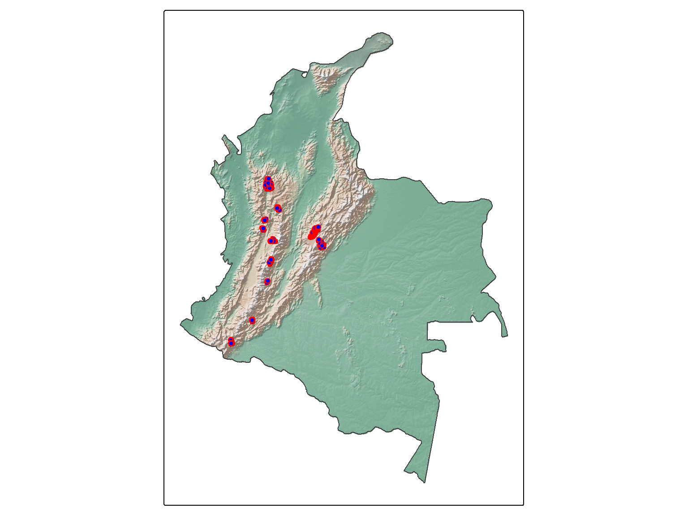
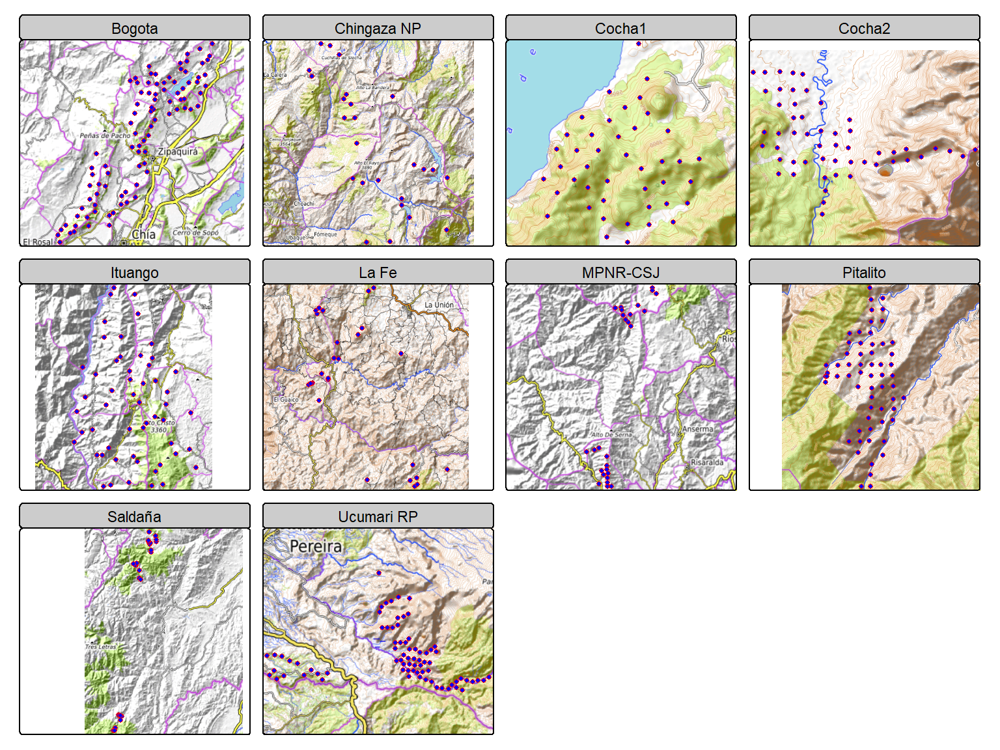
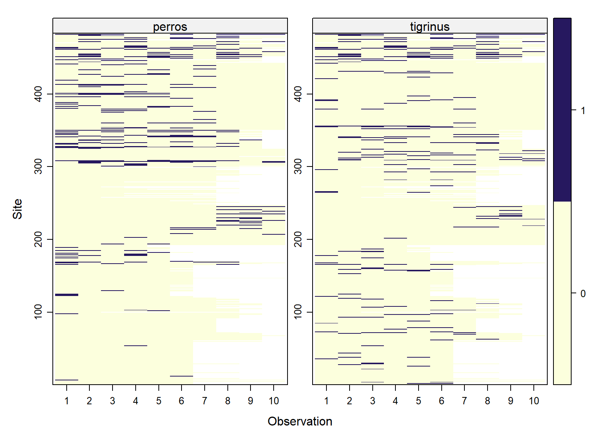
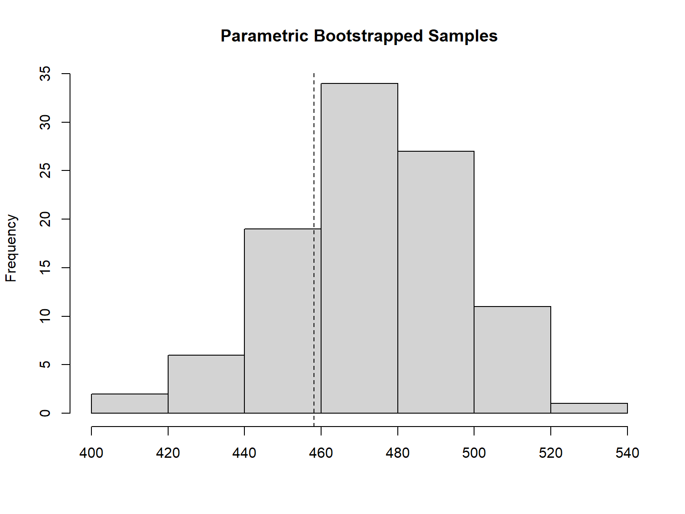
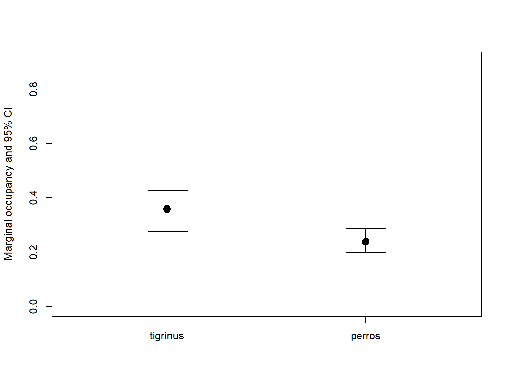
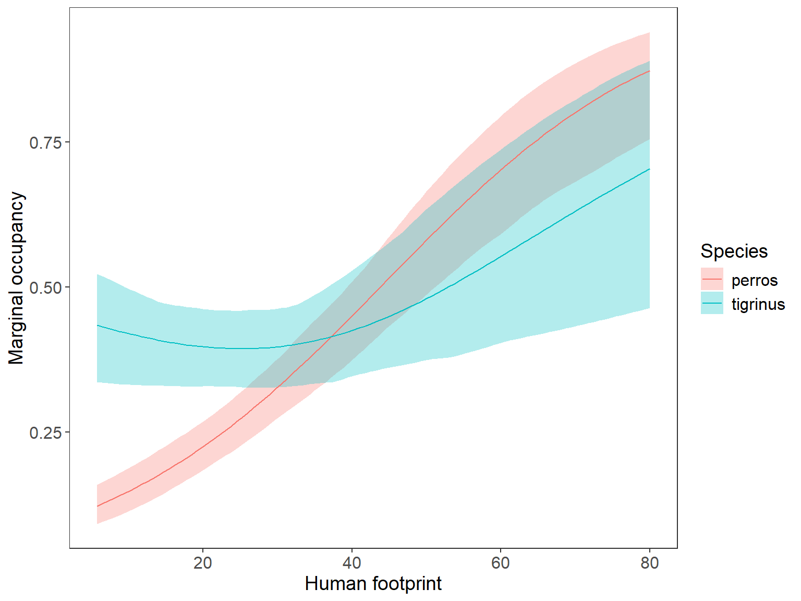
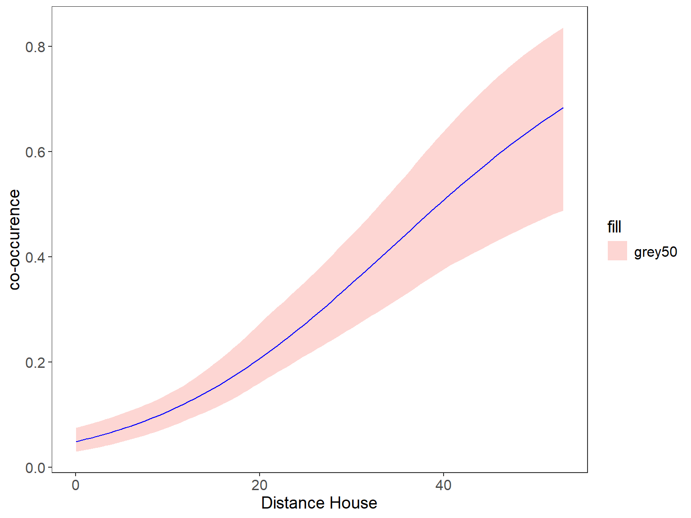
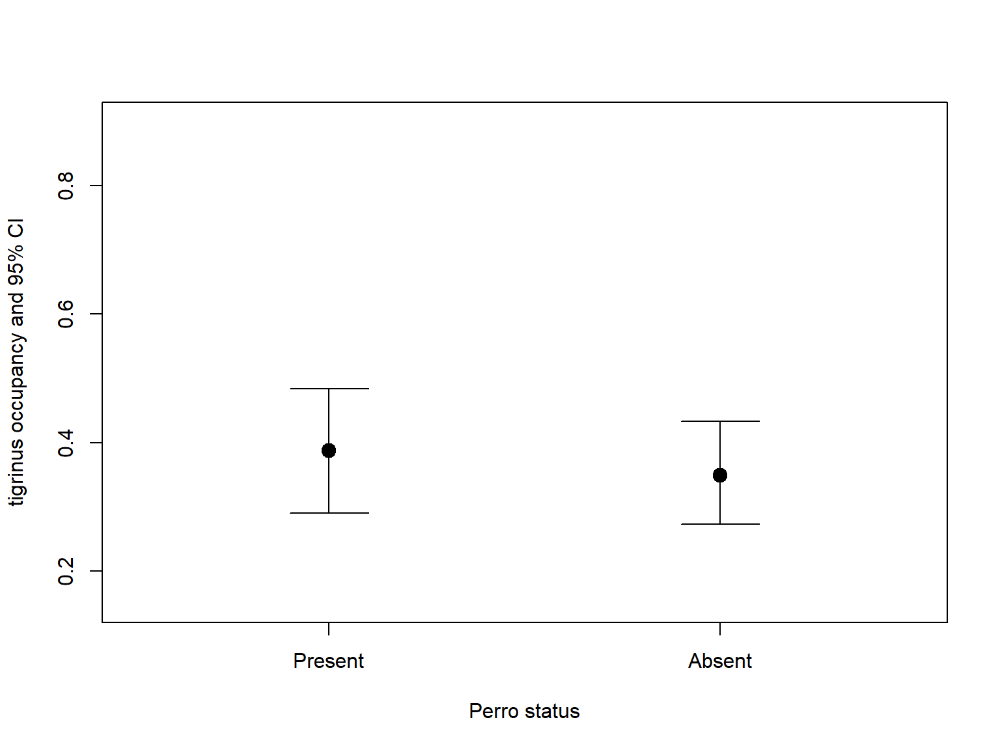
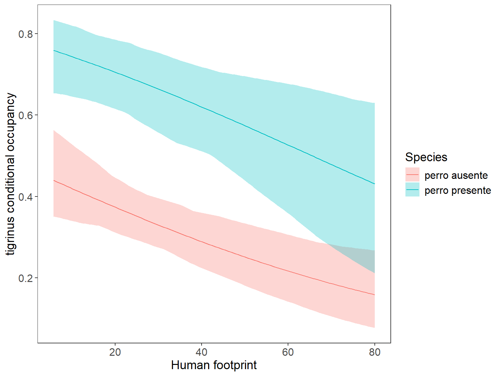
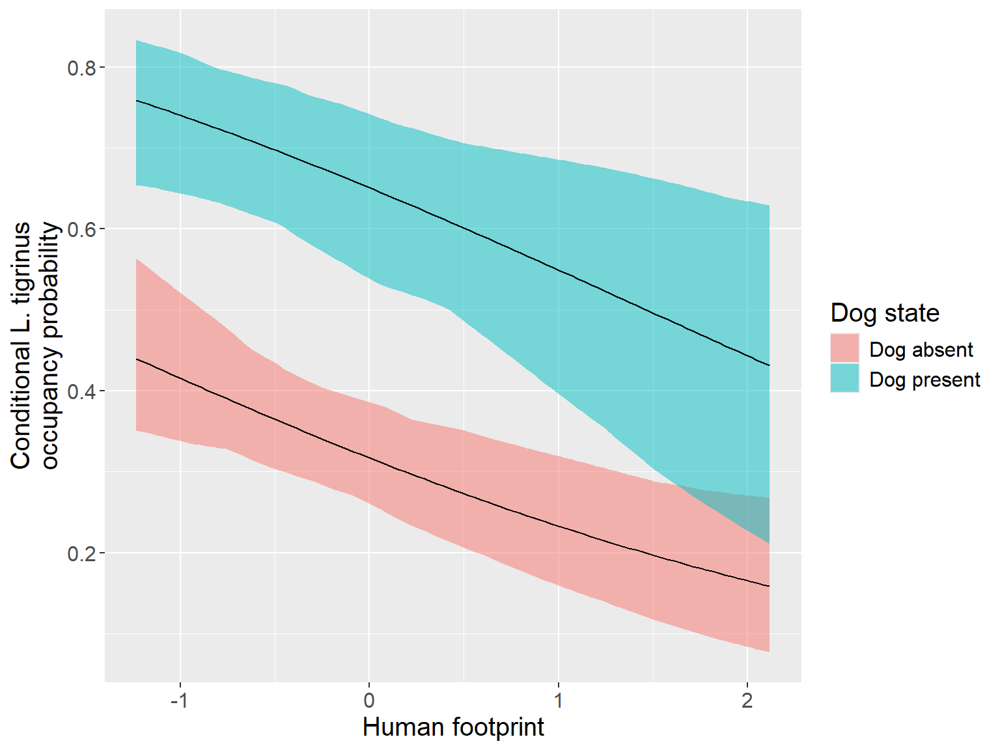

Multispecies occupancy model from Rota et al. (2016), for two (or more) interacting species.
Rota, C.T., et al. 2016. A multi-species occupancy model for two or more interacting species. Methods in Ecology and Evolution 7: 1164-1173.
The model generalizes the standard single-species occupancy model from MacKenzie et al. (2002), as a multispecies occupancy model designed for analyzing presence/absence data of two or more interacting species. It builds upon the standard single-species occupancy model by incorporating the potential for interactions between species. The model estimates occupancy probabilities for each species (Marginal occupancy), as well as the strength and direction of interactions between them (conditional occupancy), and can also incorporate the effects of environmental covariates.
On the interpretation of interaction term see this link: https://groups.google.com/g/unmarked/c/W3xceS-hSNA/m/8OvCD93BAQAJ
If the estimate of species1:species2 intercept is positive, then species 1 has greater occupancy probability at sites occupied by species 2. The reverse is also true: species 2 has greater occupancy at sites occupied by species 1. It might be more helpful to think about the value of the parameter it this way: are species 1 and 2 likely to occupy the same sites (species1:species2 positive), different sites (species1:species2 negative), or be independent of each other (species1:species2 = 0)?
We used Leopardus pardinoides and domestic dog data from 10 regions across the Colombian Andes, sampled with arrays of 20 to 60 camera traps, to exploring evidence for interactions with domestic dog while accounting for the effects of environmental variables and imperfect detection.
Cargar paquetes
codigo R
library(knitr)
library(mapview) # mapas facil
library(readxl) #leer datos
library(readr) # lee datos
library(sf) # vector map
library(geodata) # replace getData de raster para Terra
library(raster) # mapas raster
library(spatstat) # interpola mapa
# library(maptools) # to coerce to ppp. note that 'maptools' will be retired by the end of 2023
# library(rgdal) # rgdal will be retired during 2023 #some tricks to change projection
# library(stars)
# library(unmarked) # occu models
library(DT) # html table
library(camtrapR) # camera trap data creation
library(terra) # new raster
library(elevatr) # get elevation
library(DT) # tables
library (tmap) # nice maps
library(rnaturalearth) # colombia map
library(grateful) # citation packages
library(tidyverse) # maneja datos
# source("C:/CodigoR/tigrinus2/R/organizadato.R") # old version
source("C:/CodigoR/WCS-CameraTrap/R/organiza_datos_v3.R") # new versionCargar datos
Ucumari, Pitalito, La cocha1, La Fe, Rio Grande, La cocha2, Ituango, Chingaza, Saldaña y Bogotá.
codigo R
Full_data_ucu <- read_excel("D:/BoxFiles/Box Sync/CodigoR/tigrinus/data/Full_data_Ucumari_Huila_Cocha1_Cocha2.xlsx",
sheet = "ucumari", col_types = c("numeric",
"text", "text", "text", "text", "text",
"text", "text", "text", "text", "text",
"text", "text", "text", "text", "numeric",
"text", "text", "text", "text", "text",
"text", "text", "text", "text", "numeric",
"numeric", "numeric", "numeric",
"text"))
Full_data_pitalito <- read_csv("D:/BoxFiles/Box Sync/CodigoR/tigrinus/data/huila_merged.csv",
col_types = cols(`Date_Time Captured` = col_character(),
camera_trap_start_date = col_character(),
camera_trap_end_date = col_character()))
Full_data_pitalito <- read_csv("D:/BoxFiles/Box Sync/CodigoR/tigrinus/data/huila_merged.csv",
col_types = cols(`Date_Time Captured` = col_character(),
camera_trap_start_date = col_character(),
camera_trap_end_date = col_character()))
Full_data_cocha1 <- read_csv("D:/BoxFiles/Box Sync/CodigoR/tigrinus/data/Cocha1_merged.csv",
col_types = cols(camera_trap_start_date = col_character(),
camera_trap_end_date = col_character()))
Full_data_cocha2 <- read_csv("D:/BoxFiles/Box Sync/CodigoR/tigrinus/data/Cocha_2.csv",
col_types = cols(camera_trap_start_date = col_character(),
"Photo time" = col_character(),
"Photo Date" = col_character(),
camera_trap_end_date = col_character()))
Full_data_cocha2$camera_trap <- Full_data_cocha2$`Camera Trap Name`
lafe_data <- read_excel("C:/CodigoR/tigrinus2/data/cuencaverde.xlsx", sheet = "LaFe_2021")
lafe_data$year <- year(lafe_data$Photo_Date)
# filter by 2021
# lafe_data <- lafe_data_raw %>% filter(year == "2021")
riogrande_data <- read_excel("C:/CodigoR/tigrinus2/data/cuencaverde.xlsx",
sheet = "Riogrande_completo") |> mutate(yr=year(Photo_Date)) |> filter(yr==2021)
ituango_data <- read_excel("D:/BoxFiles/Box Sync/CodigoR/tigrinus3/Ituango/Base de Datos Final.xlsx",
sheet = "Datos_camaras12-07-2015") |> mutate(yr=Year) |> filter(yr==2015) |> filter (MES>=3 & MES<=6)
# Dista Casa Ituango en ituango_cov_occ
ituango_dis_casa <- read_csv("C:/CodigoR/tigrinus2/data/ituango_cov_occ.csv")
chingaza <- read_excel("D:/BoxFiles/Box Sync/CodigoR/tigrinus3/Chingaza/tigrinus_Perros_PNNChingaza.xlsx") |>
mutate(scientificName = paste(Genus, Species, sep= " "))
chingaza$year <- lubridate::year(chingaza$Photo_date)
chingaza_data <- chingaza |> filter(chingaza$Photo_date <= "2020-01-31")
#### usar Det_Hist_diario_cf_Ch_1year_.csv Det_Hist_diario_Lt_Ch_1year_.csv historias deteccion de ituango
perro_Saldania <- read_csv("C:/CodigoR/tigrinus2/data/perro_Saldania.csv")
tigrinus_Saldania <- read_csv("C:/CodigoR/tigrinus2/data/tigrinus_Saldania.csv")
###############
casas_Bogota <- read_csv("D:/BoxFiles/Box Sync/CodigoR/tigrinus/data/dist_casas_Bogota.csv")
perro_Bogota <- read_csv("D:/BoxFiles/Box Sync/CodigoR/tigrinus/data/Perros_Bog_occ_7D_BAY_bloques_edited.csv") |> left_join(casas_Bogota) |> as.data.frame()
row.names(perro_Bogota) <- perro_Bogota$camera_trap
tigrinus_Bogota <- read_csv("D:/BoxFiles/Box Sync/CodigoR/tigrinus/data/Tigrillo_Bog_occ_7D_BAY_bloques_edited.csv") |> left_join(casas_Bogota) |> as.data.frame()
row.names(tigrinus_Bogota) <- tigrinus_Bogota$camera_trap
effort_Bogota <- read_csv("D:/BoxFiles/Box Sync/CodigoR/tigrinus/data/effort_Bog_occ_7D_BAY_bloques_edited.csv") |> left_join(casas_Bogota) |> as.data.frame()
row.names(effort_Bogota) <- effort_Bogota$camera_trapGet elevation and distance covariates
falta: to include forest (GFW) cover y huella humana
codigo R
#casas <- read_csv("C:/CodigoR/tigrinus2/data/casas.csv")
# casas_sf <- st_as_sf(casas, coords = c("lon", "lat"), crs = "EPSG:4326")
casas_sf <- st_read("C:/CodigoR/tigrinus2/data/casas.shp")
############# start spatial part
#### make sf object
ucumari <- Full_data_ucu |>
select("Latitude",
"Longitude",
"camera_trap") |>
dplyr::distinct( ) |>
mutate(region="Ucumari RP")
pitalito <- Full_data_pitalito |>
select("Latitude",
"Longitude",
"camera_trap") |>
dplyr::distinct( ) |>
mutate(region="Pitalito")
cocha1 <- Full_data_cocha1 |>
select("Latitude",
"Longitude",
"camera_trap") |>
dplyr::distinct( ) |>
mutate(region="Cocha1")
cocha2 <- Full_data_cocha2 |>
select("Latitude",
"Longitude",
"camera_trap") |>
dplyr::distinct( ) |>
mutate(region="Cocha2")
lafe <- lafe_data |>
select("Latitude",
"Longitude",
"camera_trap") |>
dplyr::distinct( ) |>
mutate(region="La Fe")
riogrande <- riogrande_data |>
select("Latitude",
"Longitude",
"camera_trap") |>
dplyr::distinct( ) |>
mutate(region="Rio Grande")
ituango <- ituango_data |>
select("Latitude",
"Longitude",
"camera_trap") |>
dplyr::distinct( ) |>
mutate(region="Ituango")
chingaza <- chingaza_data |>
select("Latitude",
"Longitude",
"camera_trap") |>
dplyr::distinct( ) |>
mutate(region="Chingaza NP")
saldania <- tigrinus_Saldania |> mutate(camera_trap=deployment_id_cam) |>
mutate(Longitude=longitude) |>
mutate(Latitude=latitude) |>
select("Latitude",
"Longitude",
"camera_trap") |>
dplyr::distinct( ) |>
mutate(region="Saldaña")
bogota <- tigrinus_Bogota |>
select("Latitude",
"Longitude",
"camera_trap") |>
mutate(region="Bogota")
# join
puntos <- rbind(ucumari,
pitalito,
cocha1,
lafe,
riogrande,
ituango,
cocha2,
chingaza,
saldania,
bogota)
################
# plot map
################
#
# pal = mapviewPalette("mapviewTopoColors") #color palete
#
# mapview(elev_ucu_ras) +
# mapview(casa_dist_rast, col.regions = pal(100), at = seq(600, 240000, 100), legend = TRUE) +
# mapview(puntos_sf["camera_trap"])
############### end spatial partCrerar historias detección
codigo R
# make species names
Full_data_ucu$binomial <- str_c (Full_data_ucu$Genus, "_", Full_data_ucu$Species)
Full_data_pitalito$binomial <- Full_data_pitalito$`Genus Species`
# #funcion para crear todas las tablas de datos
# all_data_ucu <- f.matrix.creator2 (Full_data_ucu)
#
# # names(all_data) # ver lass especies y en que lista esta cada una
# # kable(names(all_data)) # html table
# # Tigrinus es lista 8
#
# datatable(
# data = as.data.frame(names(all_data_ucu)),
# caption = "Especies Ucumari",
# filter = "top"
# )
# fix date format
# Ucumari
Full_data_ucu$start_date <- as.Date(Full_data_ucu$"camera_trap_start_date", "%Y-%m-%d")
Full_data_ucu$end_date <- as.Date(Full_data_ucu$"camera_trap_end_date", "%Y-%m-%d")
Full_data_ucu$eventDate <- as.Date(Full_data_ucu$"Photo_Date", "%Y-%m-%d")
Full_data_ucu$eventDateTime <- ymd_hms(paste(Full_data_ucu$"Photo_Date", Full_data_ucu$"Photo time", sep=" "))
# rename camera id
Full_data_ucu$camid <- Full_data_ucu$`camera_trap`
# Pitalito
Full_data_pitalito$start_date <- as.Date(Full_data_pitalito$"camera_trap_start_date", "%Y-%m-%d")
Full_data_pitalito$end_date <- as.Date(Full_data_pitalito$"camera_trap_end_date", "%Y-%m-%d")
# Full_data_pitalito$eventDate <- as.Date(Full_data_pitalito$, "%Y-%m-%d")
Full_data_pitalito$eventDateTime <- ymd_hms(Full_data_pitalito$`Date_Time Captured`)
# rename camera id
Full_data_pitalito$camid <- Full_data_pitalito$camera_trap
# La Fe
lafe_data$start_date <- as.Date(lafe_data$"camera_trap_start_date", "%Y-%m-%d")
lafe_data$end_date <- as.Date(lafe_data$"camera_trap_end_date", "%Y-%m-%d")
lafe_data$eventDate <- as.Date(lafe_data$Photo_Date, "%Y-%m-%d")
lafe_data$eventDateTime <- ymd_hms(paste(lafe_data$"Photo_Date", lafe_data$"Photo time", sep=" "))# rename camera id
lafe_data$camid <- lafe_data$camera_trap
# Rio Grande
riogrande_data$start_date <- as.Date(riogrande_data$"camera_trap_start_date", "%Y-%m-%d")
riogrande_data$end_date <- as.Date(riogrande_data$"camera_trap_end_date", "%Y-%m-%d")
riogrande_data$eventDate <- as.Date(riogrande_data$Photo_Date, "%Y-%m-%d")
riogrande_data$eventDateTime <- lubridate::ymd_hm(paste(
as.Date(riogrande_data$"Photo_Date", "%Y-%m-%d"),
riogrande_data$"Photo time",
sep=" "),
tz = "America/Bogota")
# rename camera id
riogrande_data$camid <- riogrande_data$camera_trap
# Ituango add start end
ituango_data$start_date <- as.Date("2015-03-01", "%Y-%m-%d")
ituango_data$end_date <- as.Date("2015-06-30", "%Y-%m-%d")
ituango_data$eventDate <- as.Date(
paste(ituango_data$Year,
ituango_data$MES,
ituango_data$DIA,
sep="-"
),"%Y-%m-%d")
ituango_data$eventDateTime <- lubridate::ymd_hm(paste(
as.character(ituango_data$eventDate),
ituango_data$"HORA",
sep=" "),
tz = "America/Bogota")
# rename camera id
ituango_data$camid <- ituango_data$camera_trap
# Chingaza
chingaza_data$start_date <- as.Date("2019-09-26", "%Y-%m-%d")# as.Date(chingaza_data$"Camera Start Date", "%Y-%m-%d")
chingaza_data$eventDateTime <- lubridate::ymd_hms(
paste(
as.character(chingaza_data$Photo_date),
chingaza_data$Photo_time,
sep=" ")
#tz = "America/Bogota",
)
chingaza_data$end_date <- NA
# loop to fix dates
for (i in 1:length(chingaza_data$"Camera End Date")) {
if (chingaza_data$"Camera End Date"[i]<="2020-01-31") {
chingaza_data$end_date[i] = as.Date(chingaza_data$"Camera End Date", "%Y-%m-%d")[i]
} else {
chingaza_data$end_date[i] = as.Date("2020-02-01", "%Y-%m-%d")
}
# print(chingaza_data$end_date[i])
}
chingaza_data$end_date <- as.Date(chingaza_data$end_date)
#as.Date("2020-09-01", "%Y-%m-%d")
# rename camera id
chingaza_data$camid <- chingaza_data$camera_trap
# filter 2021 and make uniques
ucu_CToperation <- Full_data_ucu |> dplyr::group_by(camid) |> #(array_locID) |>
mutate(minStart=start_date, maxEnd=end_date) |> distinct(Longitude, Latitude, minStart, maxEnd) |> dplyr::ungroup()
# remove one duplicated
# View(CToperation)
# CToperation <- CToperation[-15,]
pitalito_CToperation <- Full_data_pitalito |> dplyr::group_by(camid) |> #(array_locID) |>
mutate(minStart=start_date, maxEnd=end_date) |> distinct(Longitude, Latitude, minStart, maxEnd) |> dplyr::ungroup()
lafe_CToperation <- lafe_data |> dplyr::group_by(camid) |> #(array_locID) |>
mutate(minStart=start_date, maxEnd=end_date) |> distinct(Longitude, Latitude, minStart, maxEnd) |> dplyr::ungroup()
### selecting 2021
riogrande_CToperation <- riogrande_data |>
dplyr::group_by(camid) |> #(array_locID) |>
mutate(minStart=start_date, maxEnd=end_date) |> distinct(Longitude, Latitude, minStart, maxEnd) |> dplyr::ungroup()
ituango_CToperation <- ituango_data |>
dplyr::group_by(camid) |> #(array_locID) |>
mutate(minStart=start_date, maxEnd=end_date) |> distinct(Longitude, Latitude, minStart, maxEnd) |> dplyr::ungroup()
chingaza_CToperation <- chingaza_data |>
dplyr::group_by(camid) |> #(array_locID) |>
mutate(minStart=start_date, maxEnd=end_date) |> distinct(Longitude, Latitude, minStart, maxEnd) |> dplyr::ungroup()
# remove dos problematic in lafe
# lafe_CToperation <- lafe_CToperation[-c(28,29),]
# Generamos la matríz de operación de las cámaras
ucu_camop <- cameraOperation(CTtable= ucu_CToperation, # Tabla de operación
stationCol= "camid", # Columna que define la estación
setupCol= "minStart", #Columna fecha de colocación
retrievalCol= "maxEnd", #Columna fecha de retiro
#hasProblems= T, # Hubo fallos de cámaras
dateFormat= "%Y-%m-%d")#, #, # Formato de las fechas
#cameraCol="Camera_Id")
# sessionCol= "Year")
pitalito_camop <- cameraOperation(CTtable= pitalito_CToperation, # Tabla de operación
stationCol= "camid", # Columna que define la estación
setupCol= "minStart", #Columna fecha de colocación
retrievalCol= "maxEnd", #Columna fecha de retiro
#hasProblems= T, # Hubo fallos de cámaras
dateFormat= "%Y-%m-%d")#, #, # Formato de las fechas
#cameraCol="Camera_Id")
# sessionCol= "Year")
lafe_camop <- cameraOperation(CTtable= lafe_CToperation, # Tabla de operación
stationCol= "camid", # Columna que define la estación
setupCol= "minStart", #Columna fecha de colocación
retrievalCol= "maxEnd", #Columna fecha de retiro
#hasProblems= T, # Hubo fallos de cámaras
dateFormat= "%Y-%m-%d")#, #, # Formato de las fechas
#cameraCol="Camera_Id")
# sessionCol= "Year")
riogrande_camop <- cameraOperation(CTtable= riogrande_CToperation, # Tabla de operación
stationCol= "camid", # Columna que define la estación
setupCol= "minStart", #Columna fecha de colocación
retrievalCol= "maxEnd", #Columna fecha de retiro
#hasProblems= T, # Hubo fallos de cámaras
dateFormat= "%Y-%m-%d")#, #, # Formato de las fechas
#cameraCol="Camera_Id")
# sessionCol= "Year")
ituango_camop <- cameraOperation(CTtable= ituango_CToperation, # Tabla de operación
stationCol= "camid", # Columna que define la estación
setupCol= "minStart", #Columna fecha de colocación
retrievalCol= "maxEnd", #Columna fecha de retiro
#hasProblems= T, # Hubo fallos de cámaras
dateFormat= "%Y-%m-%d")#, #, # Formato de las fechas
#cameraCol="Camera_Id")
# sessionCol= "Year")
chingaza_camop <- cameraOperation(CTtable= chingaza_CToperation, # Tabla de operación
stationCol= "camid", # Columna que define la estación
setupCol= "minStart", #Columna fecha de colocación
retrievalCol= "maxEnd", #Columna fecha de retiro
#hasProblems= T, # Hubo fallos de cámaras
dateFormat= "%Y-%m-%d")#, #, # Formato de las fechas
#cameraCol="Camera_Id")
# sessionCol= "Year")
# Generar las historias de detección ---------------------------------------
## remove problem species
Full_data_ucu$scientificName <- paste(Full_data_ucu$Genus,
Full_data_ucu$Species,
sep=" ")
#### remove setups
ucu_ind <- which(Full_data_ucu$scientificName=="NA NA")
Full_data_ucu <- Full_data_ucu[-ucu_ind,]
# ind <- which(Ecu_full$scientificName=="Set up")
# Ecu_full <- Ecu_full[-ind,]
#
# ind <- which(Ecu_full$scientificName=="Blank")
# Ecu_full <- Ecu_full[-ind,]
#
# ind <- which(Ecu_full$scientificName=="Unidentifiable")
# Ecu_full <- Ecu_full[-ind,]
Full_data_pitalito$scientificName <- Full_data_pitalito$`Genus Species`
#### remove setups and NAs
pitalito_ind <- which(is.na(Full_data_pitalito$scientificName))
Full_data_pitalito <- Full_data_pitalito[-pitalito_ind,]
# fix lafe
lafe_data$scientificName <- lafe_data$binomial
# fix riogrande
riogrande_data$scientificName <- riogrande_data$binomial
#### remove setups and NAs
riogrande_data_ind <- which(riogrande_data$scientificName=="NA_NA")
riogrande_data <- riogrande_data[-riogrande_data_ind,]
#### remove setups and NAs
ituango_data_ind <- which(ituango_data$scientificName=="NA")
ituango_data <- ituango_data[-ituango_data_ind,]
############### Ucu
ucu_DetHist_list <- lapply(unique(Full_data_ucu$scientificName), FUN = function(x) {
detectionHistory(
recordTable = Full_data_ucu, # tabla de registros
camOp = ucu_camop, # Matriz de operación de cámaras
stationCol = "camid",
speciesCol = "scientificName",
recordDateTimeCol = "eventDateTime",
recordDateTimeFormat = "%Y-%m-%d %H:%M:%S",
species = x, # la función reemplaza x por cada una de las especies
occasionLength = 8, # Colapso de las historias a 10 ías
day1 = "station", # "survey" a specific date, "station", #inicie en la fecha de cada survey
datesAsOccasionNames = FALSE,
includeEffort = TRUE,
scaleEffort = FALSE,
#unmarkedMultFrameInput=TRUE
timeZone = "America/Bogota"
)
}
)
# names
names(ucu_DetHist_list) <- unique(Full_data_ucu$scientificName)
# Finalmente creamos una lista nueva donde estén solo las historias de detección
ucumari_ylist <- lapply(ucu_DetHist_list, FUN = function(x) x$detection_history)
# otra lista con effort scaled
ucumari_efort <- lapply(ucu_DetHist_list, FUN = function(x) x$effort)
# number of observetions per sp, collapsed to 7 days
# lapply(ylist, sum, na.rm = TRUE)
# leopardus tigrinus 7
# canis 18
############## Pitalito
pitalito_DetHist_list <- lapply(unique(Full_data_pitalito$scientificName), FUN = function(x) {
detectionHistory(
recordTable = Full_data_pitalito, # tabla de registros
camOp = pitalito_camop, # Matriz de operación de cámaras
stationCol = "camid",
speciesCol = "scientificName",
recordDateTimeCol = "eventDateTime",
recordDateTimeFormat = "%Y-%m-%d %H:%M:%S",
species = x, # la función reemplaza x por cada una de las especies
occasionLength = 6, # Colapso de las historias a 10 días
day1 = "station", # "survey" a specific date, "station", #inicie en la fecha de cada survey
datesAsOccasionNames = FALSE,
includeEffort = TRUE,
scaleEffort = FALSE,
#unmarkedMultFrameInput=TRUE
timeZone = "America/Bogota"
)
}
)
# names
names(pitalito_DetHist_list) <- unique(Full_data_pitalito$scientificName)
# Finalmente creamos una lista nueva donde estén solo las historias de detección
pitalito_ylist <- lapply(pitalito_DetHist_list, FUN = function(x) x$detection_history)
# otra lista con effort scaled
pitalito_efort <- lapply(pitalito_DetHist_list, FUN = function(x) x$effort)
# perro 41
# tigrinus 5
############## La Fe
# lafe_data <- lafe_data |>
# filter(camid != "Palmas_Ladera") |>
# filter(camid != "Abuel_Ladera")
lafe_DetHist_list <- lapply(unique(lafe_data$scientificName), FUN = function(x) {
detectionHistory(
recordTable = lafe_data, # tabla de registros
camOp = lafe_camop, # Matriz de operación de cámaras
stationCol = "camid",
speciesCol = "scientificName",
recordDateTimeCol = "eventDateTime",
recordDateTimeFormat = "%Y-%m-%d %H:%M:%S",
species = x, # la función reemplaza x por cada una de las especies
occasionLength = 7, # Colapso de las historias a 10 días
day1 = "station", # "survey" a specific date, "station", #inicie en la fecha de cada survey
datesAsOccasionNames = FALSE,
includeEffort = TRUE,
scaleEffort = FALSE,
#unmarkedMultFrameInput=TRUE
timeZone = "America/Bogota"
)
}
)
# names
names(lafe_DetHist_list) <- unique(lafe_data$scientificName)
# Finalmente creamos una lista nueva donde estén solo las historias de detección
lafe_ylist <- lapply(lafe_DetHist_list, FUN = function(x) x$detection_history)
# otra lista con effort scaled
lafe_efort <- lapply(lafe_DetHist_list, FUN = function(x) x$effort)
# perro 2
# tigrinus 3
############## Rio Grande
# lafe_data <- lafe_data |>
# filter(camid != "Palmas_Ladera") |>
# filter(camid != "Abuel_Ladera")
riogrande_DetHist_list <- lapply(unique(riogrande_data$scientificName), FUN = function(x) {
detectionHistory(
recordTable = riogrande_data, # tabla de registros
camOp = riogrande_camop, # Matriz de operación de cámaras
stationCol = "camid",
speciesCol = "scientificName",
recordDateTimeCol = "eventDateTime",
recordDateTimeFormat = "%Y-%m-%d %H:%M:%S",
species = x, # la función reemplaza x por cada una de las especies
occasionLength = 8, # Colapso de las historias a 10 días
day1 = "station", # "survey" a specific date, "station", #inicie en la fecha de cada survey
datesAsOccasionNames = FALSE,
includeEffort = TRUE,
scaleEffort = FALSE,
#unmarkedMultFrameInput=TRUE
timeZone = "America/Bogota"
)
}
)
# names
names(riogrande_DetHist_list) <- unique(riogrande_data$scientificName)
# Finalmente creamos una lista nueva donde estén solo las historias de detección
riogrande_ylist <- lapply(riogrande_DetHist_list, FUN = function(x) x$detection_history)
# otra lista con effort scaled
riogrande_efort <- lapply(riogrande_DetHist_list, FUN = function(x) x$effort)
# perro 2
# tigrinus 3
############## Ituango
# lafe_data <- lafe_data |>
# filter(camid != "Palmas_Ladera") |>
# filter(camid != "Abuel_Ladera")
ituango_DetHist_list <- lapply(unique(ituango_data$scientificName), FUN = function(x) {
detectionHistory(
recordTable = ituango_data, # tabla de registros
camOp = ituango_camop, # Matriz de operación de cámaras
stationCol = "camid",
speciesCol = "scientificName",
recordDateTimeCol = "eventDateTime",
recordDateTimeFormat = "%Y-%m-%d %H:%M:%S",
species = x, # la función reemplaza x por cada una de las especies
occasionLength = 13, # Colapso de las historias a 10 días
day1 = "station", # "survey" a specific date, "station", #inicie en la fecha de cada survey
datesAsOccasionNames = FALSE,
includeEffort = TRUE,
scaleEffort = FALSE,
#unmarkedMultFrameInput=TRUE
timeZone = "America/Bogota"
)
}
)
# names
names(ituango_DetHist_list) <- unique(ituango_data$scientificName)
# Finalmente creamos una lista nueva donde estén solo las historias de detección
ituango_ylist <- lapply(ituango_DetHist_list, FUN = function(x) x$detection_history)
# otra lista con effort scaled
ituango_efort <- lapply(ituango_DetHist_list, FUN = function(x) x$effort)
# perro 5
# tigrinus 26
chingaza_DetHist_list <- lapply(unique(chingaza_data$scientificName), FUN = function(x) {
detectionHistory(
recordTable = chingaza_data, # tabla de registros
camOp = chingaza_camop, # Matriz de operación de cámaras
stationCol = "camid",
speciesCol = "scientificName",
recordDateTimeCol = "eventDateTime",
recordDateTimeFormat = "%Y-%m-%d %H:%M:%S",
species = x, # la función reemplaza x por cada una de las especies
occasionLength = 13, # Colapso de las historias a 10 días
day1 = "station", # "survey" a specific date, "station", #inicie en la fecha de cada survey
datesAsOccasionNames = FALSE,
includeEffort = TRUE,
scaleEffort = FALSE,
#unmarkedMultFrameInput=TRUE
timeZone = "America/Bogota"
)
}
)
# names
names(chingaza_DetHist_list) <- unique(chingaza_data$scientificName)
# Finalmente creamos una lista nueva donde estén solo las historias de detección
chingaza_ylist <- lapply(chingaza_DetHist_list, FUN = function(x) x$detection_history)
# otra lista con effort scaled
chingaza_efort <- lapply(chingaza_DetHist_list, FUN = function(x) x$effort)
# perro 1
# tigrinus 2Cocha data
codigo R
# fix dates
Full_data_cocha1$start_date <- as.Date(Full_data_cocha1$"camera_trap_start_date", "%Y-%m-%d")
Full_data_cocha1$end_date <- as.Date(Full_data_cocha1$"camera_trap_end_date", "%Y-%m-%d")
Full_data_cocha1$eventDateTime <- Full_data_cocha1$Date_Time #, "%Y-%m-%d")
# remove NA in datetime
# Full_data_cocha1$eventDateTime <- ymd_hms(paste(Full_data_cocha1$"Photo_Date", Full_data_cocha1$"Photo time", sep=" "))
# rename camera id
Full_data_cocha1$camid <- Full_data_cocha1$`camera_trap`
# filter 2021 and make uniques
cocha1_CToperation <- Full_data_cocha1 |> dplyr::group_by(camid) |> #(array_locID) |>
mutate(minStart=start_date, maxEnd=end_date) |> distinct(Longitude, Latitude, minStart, maxEnd) |> dplyr::ungroup()
# remove one duplicated
# View(CToperation)
# CToperation <- CToperation[-15,]
# Generamos la matríz de operación de las cámaras
cocha1_camop <- cameraOperation(CTtable= cocha1_CToperation, # Tabla de operación
stationCol= "camid", # Columna que define la estación
setupCol= "minStart", #Columna fecha de colocación
retrievalCol= "maxEnd", #Columna fecha de retiro
#hasProblems= T, # Hubo fallos de cámaras
dateFormat= "%Y-%m-%d")#, #, # Formato de las fechas
#cameraCol="Camera_Id")
# sessionCol= "Year")
# Generar las historias de detección ---------------------------------------
## remove problem species
Full_data_cocha1$scientificName <- Full_data_cocha1$`Genus Species`
#### remove setups
cocha1_ind <- which(is.na((Full_data_cocha1$scientificName)))
Full_data_cocha1 <- Full_data_cocha1[-cocha1_ind,]
# ind <- which(Ecu_full$scientificName=="Set up")
# Ecu_full <- Ecu_full[-ind,]
#
# ind <- which(Ecu_full$scientificName=="Blank")
# Ecu_full <- Ecu_full[-ind,]
#
# ind <- which(Ecu_full$scientificName=="Unidentifiable")
# Ecu_full <- Ecu_full[-ind,]
############### cocha1
cocha1_DetHist_list <- lapply(unique(Full_data_cocha1$scientificName), FUN = function(x) {
detectionHistory(
recordTable = Full_data_cocha1, # abla de registros
camOp = cocha1_camop, # Matriz de operación de cámaras
stationCol = "camid",
speciesCol = "scientificName",
recordDateTimeCol = "eventDateTime",
recordDateTimeFormat = "%Y-%m-%d %H:%M:%S",
species = x, # la función reemplaza x por cada una de las especies
occasionLength = 8, # Colapso de las historias a 10 ías
day1 = "station", # "survey" a specific date, "station", #inicie en la fecha de cada survey
datesAsOccasionNames = FALSE,
includeEffort = TRUE,
scaleEffort = FALSE,
#unmarkedMultFrameInput=TRUE
timeZone = "America/Bogota"
)
}
)
# names
names(cocha1_DetHist_list) <- unique(Full_data_cocha1$scientificName)
# Finalmente creamos una lista nueva donde estén solo las historias de detección
cocha1_ylist <- lapply(cocha1_DetHist_list, FUN = function(x) x$detection_history)
# otra lista con effort scaled
cocha1_efort <- lapply(cocha1_DetHist_list, FUN = function(x) x$effort)
# number of observetions per sp, collapsed to 7 days
# lapply(ylist, sum, na.rm = TRUE)
# leopardus tigrinus 9
# canis 1
############################
#### Cocha 2
############################
# fix dates
Full_data_cocha2$start_date <- as.Date(Full_data_cocha2$"camera_trap_start_date", "%Y-%m-%d")
Full_data_cocha2$end_date <- as.Date(Full_data_cocha2$"camera_trap_end_date", "%Y-%m-%d")
Full_data_cocha2$eventDateTime <- ymd_hms(paste(Full_data_cocha2$"Photo Date", Full_data_cocha2$"Photo time", sep=" "))
# remove NA in datetime
# Full_data_cocha1$eventDateTime <- ymd_hms(paste(Full_data_cocha1$"Photo_Date", Full_data_cocha1$"Photo time", sep=" "))
# rename camera id
Full_data_cocha2$camid <- Full_data_cocha2$`Camera Trap Name`
# filter 2021 and make uniques
cocha2_CToperation <- Full_data_cocha2 |> dplyr::group_by(camid) |> #(array_locID) |>
mutate(minStart=start_date, maxEnd=end_date) |> distinct(Longitude, Latitude, minStart, maxEnd) |> dplyr::ungroup()
# remove one duplicated
# View(CToperation)
# CToperation <- CToperation[-15,]
# Generamos la matríz de operación de las cámaras
cocha2_camop <- cameraOperation(CTtable= cocha2_CToperation, # Tabla de operación
stationCol= "camid", # Columna que define la estación
setupCol= "minStart", #Columna fecha de colocación
retrievalCol= "maxEnd", #Columna fecha de retiro
#hasProblems= T, # Hubo fallos de cámaras
dateFormat= "%Y-%m-%d")#, #, # Formato de las fechas
#cameraCol="Camera_Id")
# sessionCol= "Year")
# Generar las historias de detección ---------------------------------------
## remove problem species
Full_data_cocha2$scientificName <- Full_data_cocha2$`Genus Species`
#### remove setups
cocha2_ind <- which(is.na((Full_data_cocha2$scientificName)))
Full_data_cocha2 <- Full_data_cocha2[-cocha2_ind,]
# ind <- which(Ecu_full$scientificName=="Set up")
# Ecu_full <- Ecu_full[-ind,]
############### cocha2
cocha2_DetHist_list <- lapply(unique(Full_data_cocha2$scientificName), FUN = function(x) {
detectionHistory(
recordTable = Full_data_cocha2, # abla de registros
camOp = cocha2_camop, # Matriz de operación de cámaras
stationCol = "camid",
speciesCol = "scientificName",
recordDateTimeCol = "eventDateTime",
recordDateTimeFormat = "%Y-%m-%d %H:%M:%S",
species = x, # la función reemplaza x por cada una de las especies
occasionLength = 13, # Colapso de las historias a 10 ías
day1 = "station", # "survey" a specific date, "station", #inicie en la fecha de cada survey
datesAsOccasionNames = FALSE,
includeEffort = TRUE,
scaleEffort = FALSE,
#unmarkedMultFrameInput=TRUE
timeZone = "America/Bogota"
)
}
)
# names
names(cocha2_DetHist_list) <- unique(Full_data_cocha2$scientificName)
# Finalmente creamos una lista nueva donde estén solo las historias de detección
cocha2_ylist <- lapply(cocha2_DetHist_list, FUN = function(x) x$detection_history)
# otra lista con effort scaled
cocha2_efort <- lapply(cocha2_DetHist_list, FUN = function(x) x$effort)
# number of observetions per sp, collapsed to 7 days
# lapply(ylist, sum, na.rm = TRUE)
# leopardus tigrinus 29
# canis NA
# Pitalito
# perro 41
# tigrinus 5Data assembly
codigo R
#### Cocha 2
tigrinus_cocha2 <- cocha2_ylist[[29]] |> as.data.frame()
effort_cocha2 <- cocha2_efort[[29]] |> as.data.frame() |>
mutate(across(everything(), ~replace_na(., 0))) # replace NA to 0
# perro no hay en cocha2
my_vector <- cocha2_ylist[[29]]
perros_cocha2 <- ifelse(my_vector == 1, 0, my_vector) |> as.data.frame() # convert 1 to 0
#### Cocha 1
tigrinus_cocha1 <- cocha1_ylist[[9]] |> as.data.frame()
effort_cocha1 <- cocha1_efort[[9]] |> as.data.frame() |>
mutate(across(everything(), ~replace_na(., 0))) # replace NA to 0
# si hay perro en cocha2
# my_vector <- tigrinus_cocha2
perros_cocha1 <- cocha1_ylist[[1]] |> as.data.frame()# ifelse(my_vector == 1, 0, my_vector) # convert 1 to 0
#### LaFe
tigrinus_lafe <- lafe_ylist[[3]] |> as.data.frame()
effort_lafe <- lafe_efort[[3]] |> as.data.frame()|>
mutate(across(everything(), ~replace_na(., 0))) # replace NA to 0
# my_vector <- tigrinus_cocha2
perros_lafe <- lafe_ylist[[2]] |> as.data.frame() # ifelse(my_vector == 1, 0, my_vector) # convert 1 to 0
# perro 2
# tigrinus 3
#### Rio Grande
tigrinus_riogrande <- riogrande_ylist[[11]] |> as.data.frame()
effort_riogrande <- riogrande_efort[[11]] |> as.data.frame()|>
mutate(across(everything(), ~replace_na(., 0))) # replace NA to 0
# my_vector <- tigrinus_cocha2
perros_riogrande <- riogrande_ylist[[1]] |> as.data.frame() # ifelse(my_vector == 1, 0, my_vector) # convert 1 to 0
# perro 1
# tigrinus 11
#### Ituango
tigrinus_ituango <- ituango_ylist[[26]] |> as.data.frame()
effort_ituango <- ituango_efort[[26]] |> as.data.frame()|>
mutate(across(everything(), ~replace_na(., 0))) # replace NA to 0
# my_vector <- tigrinus_cocha2
perros_ituango <- ituango_ylist[[5]] |> as.data.frame() # ifelse(my_vector == 1, 0, my_vector) # convert 1 to 0
# perro 5
# tigrinus 26
#### Chingaza
tigrinus_chingaza <- chingaza_ylist[[2]] |> as.data.frame()
effort_chingaza <- chingaza_efort[[2]] |> as.data.frame()|>
mutate(across(everything(), ~replace_na(., 0))) # replace NA to 0
# my_vector <- tigrinus_cocha2
perros_chingaza <- chingaza_ylist[[1]] |> as.data.frame() # ifelse(my_vector == 1, 0, my_vector) # convert 1 to 0
# perro 1
# tigrinus 2
#### Pitalito
tigrinus_pitalito <- pitalito_ylist[[5]] |> as.data.frame()
effort_pitalito <- pitalito_efort[[5]] |> as.data.frame()|>
mutate(across(everything(), ~replace_na(., 0))) # replace NA to 0
# my_vector <- tigrinus_cocha2
perros_pitalito <- pitalito_ylist[[41]] |> as.data.frame() # ifelse(my_vector == 1, 0, my_vector) # convert 1 to 0
# perro 41
# tigrinus 5
######### Ucumari
tigrinus_ucumari <- ucumari_ylist[[7]] |> as.data.frame()
effort_ucumari <- ucumari_efort[[7]] |> as.data.frame()|>
mutate(across(everything(), ~replace_na(., 0))) # replace NA to 0
# my_vector <- tigrinus_cocha2
perros_ucumari <- ucumari_ylist[[18]] |> as.data.frame() # ifelse(my_vector == 1, 0, my_vector) # convert 1 to 0
# leopardus tigrinus 7
# canis 18
################# Saldania
tigrinus_saldania <- tigrinus_Saldania[1:11] |>
column_to_rownames(var = "...1") |>
as.data.frame()
perros_saldania <- perro_Saldania[1:11] |>
column_to_rownames(var = "...1") |>
as.data.frame()
effort_Saldania <- tigrinus_Saldania[15:24] |>
# column_to_rownames(var = "...1") |>
as.data.frame()
row.names(effort_Saldania) <- row.names(tigrinus_saldania)
names(tigrinus_saldania) <- c("o1","o2","o3","o4","o5", "o6","o7","o8","o9","o10")
names(perros_saldania) <- c("o1","o2","o3","o4","o5", "o6","o7","o8","o9","o10")
names(effort_Saldania) <- c("o1","o2","o3","o4","o5", "o6","o7","o8","o9","o10")
# fix tigrinus_pitalito to complete 11 ocasiones
# tigrinus_pitalito$o11 <- NA
# perros_pitalito$o11 <- NA
# effort_pitalito$o11 <- NA
# fix tigrinus_lafe to complete 11 ocasiones
# tigrinus_lafe$o11 <- NA
# perros_lafe$o11 <- NA
# effort_lafe$o11 <- NA
DL_tigrinus <- rbind(tigrinus_ucumari,
tigrinus_pitalito,
tigrinus_cocha1,
tigrinus_lafe,
tigrinus_riogrande,
tigrinus_ituango,
tigrinus_cocha2,
tigrinus_chingaza,
tigrinus_saldania,
tigrinus_Bogota[,2:11])
# tigrinus_cocha2
#)
DL_perros <- rbind(perros_ucumari,
perros_pitalito,
perros_cocha1,
perros_lafe,
perros_riogrande,
perros_ituango,
perros_cocha2,
perros_chingaza,
perros_saldania,
perro_Bogota[,2:11])
DL_effort <- rbind(effort_ucumari,
effort_pitalito,
effort_cocha1,
effort_lafe,
effort_riogrande,
effort_ituango,
perros_cocha2,
perros_chingaza,
effort_Saldania,
effort_Bogota[,2:11])
# add colname to later extract covs
DL_tigrinus$camera_trap <- row.names(DL_tigrinus)
DL_perros$camera_trap <- row.names(DL_perros)
DL_effort$camera_trap <- row.names(DL_effort)
# Letf join con puntos
DL_tigrinus_p <- left_join(DL_tigrinus, puntos)
DL_perros_p <- left_join(DL_perros, puntos)
# DL_tigrinus_p <- left_join(DL_tigrinus, puntos)
########## add spatial covs
# make sf and add projection
puntos_tigrinus_sf <- DL_tigrinus_p |> st_as_sf(coords =
c("Longitude", "Latitude"),
crs = "EPSG:4326")
# Extract coordinates and drop geometry
# coordinates <- st_coordinates(puntos_sf)
# data_no_geometry <- st_drop_geometry(sf_data)
# get elevation points... slow!
site_covs_ucu <- get_elev_point(puntos_tigrinus_sf[1:61,],
src = "aws", z = 12)
site_covs_pit <- get_elev_point(puntos_tigrinus_sf[62:122,],
src = "aws", z = 12)
site_covs_coc1 <- get_elev_point(puntos_tigrinus_sf[123:165,],
src = "aws", z = 12)
# site_covs_coc2 <- get_elev_point(puntos_tigrinus_sf[166:218,],
# src = "aws", z = 12)
site_covs_lafe <- get_elev_point(puntos_tigrinus_sf[166:192,],
src = "aws", z = 12)
site_covs_riogrande <- get_elev_point(puntos_tigrinus_sf[193:224,],
src = "aws", z = 12)
site_covs_ituango <- get_elev_point(puntos_tigrinus_sf[225:278,],
src = "aws", z = 12)
site_covs_coc2 <- get_elev_point(puntos_tigrinus_sf[279:331,],
src = "aws", z = 12)
site_covs_ching <- get_elev_point(puntos_tigrinus_sf[332:356,],
src = "aws", z = 12)
site_covs_salda <- get_elev_point(puntos_tigrinus_sf[357:387,],
src = "aws", z = 12)
site_covs_bogo <- get_elev_point(puntos_tigrinus_sf[388:479,],
src = "aws", z = 12)
# combine points in one sf object
site_covs <- rbind(site_covs_ucu,
site_covs_pit,
site_covs_coc1,
site_covs_lafe,
site_covs_riogrande,
site_covs_ituango,
site_covs_coc2,
site_covs_ching,
site_covs_salda,
site_covs_bogo)#,
# site_covs_coc2)
#z =1-14
# bb <- st_as_sfc(st_bbox(elevation_17)) # make bounding box
############## make distance map using SF
# Convert points to sp spatialpointdatafram
# casas_points <- as(casas_sf, "Spatial")
# Projection
casas_points_utm <- st_transform(casas_sf, CRS('+init=epsg:21818'))
# convert sf to ppp
nc_spatvect <- vect(casas_points_utm)
c_spatvect <- vect(casas_points_utm)
casa_dist_rast <- distance(rast(nc_spatvect, resolution = 100), c_spatvect) #|> mask(nc_spatvect) # < resolution + detail
# Extrae distancia casas
site_covs$dist_casa <- raster::extract(casa_dist_rast, site_covs)[,2] # also works
# rename elevation
site_covs <- site_covs |> rename(elev = elevation)
### overwrite Casas Chingaza
chi_cov_occ <- read_csv("D:/BoxFiles/Box Sync/CodigoR/tigrinus2/data/chi_cov_occ.csv") |>
rename(dist_casa=dist_casas) |>
rename(camera_trap=Camara) |> select(c(dist_casa,camera_trap))
# View(chi_cov_occ)
site_covs2 <- site_covs |>
filter (region=="Chingaza NP") |>
left_join(chi_cov_occ, by = "camera_trap")
# mapview(casa_dist_rast) + mapview(site_covs[,"camera_trap"])
site_covs3 <- site_covs |>
filter (region=="Ituango") |>
left_join(ituango_dis_casa, by = "camera_trap")
# mapview(casa_dist_rast) + mapview(site_covs[,"camera_trap"])
### dirty add for Chingaza, Ituango y Bogota dist_casa
site_covs$dist_casa[332:356] <- site_covs2$dist_casa.y #chingaza
site_covs$dist_casa[225:278] <- replace_na(site_covs3$dist_casa.y, 610) # Ituango
site_covs$dist_casa[388:479] <- tigrinus_Bogota$dist_casa*100000
# ############################################
# # Canopy High using package(forestdata)
# ############################################
#
# ucu_point <- puntos_tigrinus_sf |> filter (region=="Ucumari RP")
#
# ucu_pol <- st_as_sf( # make sf
# st_buffer( # bufer 1 k
# st_as_sfc(# make sfc
# st_bbox(ucu_point) # box around point
# ),
# dist = 500)# distance bufer 500m
# )
#
#
# library(terra)
# library(tidyterra)
# library(aws.s3)
# library(forestdata)
# ## Download the data
# ucumari_eth <- fd_canopy_height(
# x = ucu_pol,
# model = "eth",
# crop = TRUE
# #mask = TRUE
# )
#
#
# ## Download the forest data... takes time!
# ucumari_forest <- fd_forest_glad(
# x=ucu_pol,
# #lon = -75.53673, lat = 4.748044,
# year = 2020,
# model = "landcover",
# # model = "eth",
# crop = TRUE,
# mask = TRUE
# )
#
#
#
# ## Print raster
# print(ucumari_forest)
#
# save
# saveRDS(DL_tigrinus_p, file = "C:/CodigoR/tigrinus2/data/asembled/DL_tigrinus_p.rds")
# saveRDS(DL_perros_p, file = "C:/CodigoR/tigrinus2/data/asembled/DL_perros_p.rds")
# saveRDS(site_covs, file = "C:/CodigoR/tigrinus2/data/asembled/site_covs.rds")
# saveRDS(DL_effort, file = "C:/CodigoR/tigrinus2/data/asembled/DL_effort.rds")
#load
# Load the data from the RDS file
DL_tigrinus_p_tofix <- readRDS(file = "C:/CodigoR/tigrinus2/data/asembled/DL_tigrinus_p.rds") |>
filter (region != "Rio Grande")
# Load the data from the RDS file
DL_perros_p_tofix <- readRDS(file = "C:/CodigoR/tigrinus2/data/asembled/DL_perros_p.rds") |>
filter (region != "Rio Grande")
# Load the data from the RDS file
site_covs_tofix <- readRDS(file = "C:/CodigoR/tigrinus2/data/asembled/site_covs.rds") |>
filter (region != "Rio Grande")
# Load the data from the RDS file
DL_effort_tofix <- readRDS(file = "C:/CodigoR/tigrinus2/data/asembled/DL_effort.rds") # |>
# filter (region != "Rio Grande")
### Load Fixed data by Alejandra
site_covs_fixed <- read_csv("data/from_aleja/occ_cov/Full_cov_occ.csv")
# merge
site_covs_2 <- site_covs_tofix |>
left_join(site_covs_fixed)
# remove Nas
ind <- which(is.na(site_covs_2$Distance_house))
site_covs <- site_covs_2[-ind,]
# make equal dimensions to site_covs deleting five Nas in Saldania
DL_effort <- DL_effort_tofix |> right_join(site_covs, by = "camera_trap")
DL_tigrinus_p <- DL_tigrinus_p_tofix |> right_join(site_covs, by = "camera_trap")
DL_perros_p <- DL_perros_p_tofix |> right_join(site_covs, by = "camera_trap")
write.csv(site_covs, "C:/CodigoR/tigrinus2/data/ToAleja/site_covs_29agosto2025.csv")Map
General map
codigo R
# save
# saveRDS(puntos_tigrinus_sf, file = "C:/CodigoR/tigrinus2/data/asembled/puntos_tigrinus_sf.rds")
#load
# Load the data from the RDS file
# puntos_tigrinus_sf <- readRDS(file = "C:/CodigoR/tigrinus2/data/asembled/puntos_tigrinus_sf.rds") |> filter (region != "Rio Grande")
puntos_tigrinus_sf <- read_csv("C:/CodigoR/tigrinus2/data/final/site_covs_29agosto2025_f.csv") |>
st_as_sf(coords = c("Longitude", "Latitude"),
crs = "EPSG:4326")
# from package rnaturalearth
col <- ne_countries(country = "Colombia", scale = "medium")
# Topo map
topomap <- rast("C:/CodigoR/tigrinus2/raster/HYP_HR_SR.tif")
topocol <- terra::crop(topomap, col, mask=T)
### Nota eliminar Rio grande ##########
# general
tm_shape(topocol, bbox = tmaptools::bb(col, ext = 1.1)) +
# tm_raster("HYP_HR_1", col.scale = tm_scale_continuous(values = terrain.colors(10))) +
tm_rgb(col = tm_vars(1:3, multivariate = TRUE)) +
tm_shape(col,
bbox = tmaptools::bb(col, ext = 5)) +
tm_borders() +
tm_shape(puntos_tigrinus_sf, # add bb
bbox = tmaptools::bb(puntos_tigrinus_sf, ext = 1.5)) + tm_symbols(shape = 21,
col = "red",
fill = "blue",
size =0.4)
codigo R
# tm_basemap("OpenTopoMap") + # c(StreetMap = "OpenStreetMap", TopoMap = "OpenTopoMap")) +# ("Esri.WorldImagery") + # usa basemap
# tm_facets(by = "region", ncol = 3)Zoom to regions
codigo R
#####| column: screen-inset-shaded
### detallado
# tm_shape(topocol) +
# tm_rgb(col = tm_vars(1:3, multivariate = TRUE)) +
tm_shape(puntos_tigrinus_sf, is.main = TRUE) +
tm_basemap("OpenTopoMap") +# ("Esri.WorldImagery") + # usa basemap
tm_symbols(shape = 21, col = "red", fill = "blue",size =0.4) + # tm_basemap("OpenTopoMap") +
tm_facets(by = "region", ncol = 4, free.coords=TRUE) + tm_check_fix()
MODELOS DE CO-OCURRENCIA
codigo R
# Load final data
DL_tigrinus_p <- read_csv("C:/CodigoR/tigrinus2/data/final/tigrinus_p_29agosto2025.csv")
DL_perros_p <- read_csv("C:/CodigoR/tigrinus2/data/final/dogs_p_29agosto2025.csv")
DL_effort <- read_csv("C:/CodigoR/tigrinus2/data/final/Effort_29agosto2025.csv")
site_covs_sf <- puntos_tigrinus_sf
# load huella
huella_humana <- rast("C:/CodigoR/tigrinus2/raster/HuellaHumana.tif")
huella_extract <- terra::extract(huella_humana, puntos_tigrinus_sf)
site_covs_sf$HH <- huella_extract$HuellaHumana
# Drop the geometry
site_covs <- site_covs_sf |> st_drop_geometry() |> as.data.frame()
# first tigrinus then dog
detformulas <- c( "~efort_tig", "~effort_perro")#, "~1")
stateformulas <- c('~1','~1', '~1')# "~1")#, "~1", "~1", "~0")# 3 sp
stateformulas_elev_1_1 <- c('~Elevation','~Elevation', "~1") #"~0"
stateformulas_elev_2_1 <- c('~Elevation + I(Elevation^2)','~Elevation', "~1") #"~0"
stateformulas_elev_1_2 <- c('~Elevation','~Elevation + I(Elevation^2)', "~1") #"~0"
stateformulas_house_1_0 <- c('~Distance_house','~1', "~1") #"~0"
stateformulas_house_0_1 <- c('~1','~Distance_house', "~1") #"~0"
stateformulas_house_1_1 <- c('~Distance_house','~Distance_house', "~1") #
stateformulas_house_0_0_1 <- c('~1','~1', "~Distance_house") #"~0"
stateformulas_HH_1_0 <- c('~HH','~1', "~1") #"~0"
stateformulas_HH_0_1 <- c('~1','~HH', "~1") #"~0"
stateformulas_HH_1_1 <- c('~HH','~HH', "~1") #"~0"
stateformulas_HH_1_1_1 <- c('~HH','~HH', "~HH") #"~0"
state_HH_1_1_House <- c('~HH','~HH', "~Distance_house") #"~0"
y <- list(as.matrix(DL_tigrinus_p[,2:11]),# truncate 10
as.matrix(DL_perros_p[,2:11])
)#[,1:5]))# , tigrinus y perros)
names(y) <- c("tigrinus", "perros")#, "ocelote")
# obs_covs <-as.data.frame(scale(cams_ucu_sf$dist_casa))
# names(obs_covs) <- "dist_casa"
site_covs_full <- data.frame(site_covs[,c('Elevation',
'Distance_house',
"GFW",
"HH"
)])[,1:4]
site_covs_full <-as.data.frame(apply(site_covs_full,2,scale)) # notice scale here
names(site_covs_full) <- c("Elevation",
"Distance_house",
"GFW",
"HH")
#### effort
obs_covs <- list(
efort_tig=as.data.frame(DL_effort[,2:11]), # truncate to 10
effort_perro=as.data.frame(DL_effort[,2:11])
)
library(unmarked)
umf <- unmarkedFrameOccuMulti(y = y,
siteCovs = site_covs_full,
obsCovs = obs_covs)#NULL)
plot(umf)
codigo R
#umf
# occFormulas Length should match number/order of columns in fDesign
umf@fDesign f1[tigrinus] f2[perros] f3[tigrinus:perros]psi[11] 1 1 1 psi[10] 1 0 0 psi[01] 0 1 0 psi[00] 0 0 0
codigo R
#########################
null_det <- c("~1", "~1")
null_occu <- c("~1", "~1")#, "~0")
null <- occuMulti(null_det, null_occu,
umf,
method="BFGS",
se=TRUE,
engine=c("C"),
silent=TRUE,
maxOrder=1,
penalty =2,#0.5 * sum(paramvals^2)
boot=100
)Bootstraping covariance matrix
codigo R
nullCall: occuMulti(detformulas = null_det, stateformulas = null_occu, data = umf, maxOrder = 1, penalty = 2, boot = 100, method = “BFGS”, se = TRUE, engine = c(“C”), silent = TRUE)
Occupancy (logit-scale): Estimate SE z P(>|z|) [tigrinus] (Intercept) -0.567 0.138 -4.11 4.00e-05 [perros] (Intercept) -0.673 0.120 -5.61 2.07e-08
Detection (logit-scale): Estimate SE z P(>|z|) [tigrinus] (Intercept) -1.58 0.127 -12.5 1.24e-35 [perros] (Intercept) -1.38 0.108 -12.8 1.57e-37
AIC: 3439.187 Number of sites: 483 Bootstrap iterations: 100
codigo R
########################
fit1 <- occuMulti(detformulas, stateformulas, umf,
method="BFGS", se=TRUE, engine=c("C"), silent=TRUE,
maxOrder=2,
penalty =2,#0.5 * sum(paramvals^2)
boot=100,
)Bootstraping covariance matrix
codigo R
fit1 # with effortCall: occuMulti(detformulas = detformulas, stateformulas = stateformulas, data = umf, maxOrder = 2, penalty = 2, boot = 100, method = “BFGS”, se = TRUE, engine = c(“C”), silent = TRUE)
Occupancy (logit-scale): Estimate SE z P(>|z|) [tigrinus] (Intercept) -0.786 0.178 -4.42 9.99e-06 [perros] (Intercept) -0.713 0.189 -3.78 1.57e-04 [tigrinus:perros] (Intercept) 0.593 0.258 2.30 2.14e-02
Detection (logit-scale): Estimate SE z P(>|z|) [tigrinus] (Intercept) -2.0521 0.1530 -13.41 5.41e-41 [tigrinus] efort_tig 0.0704 0.0205 3.43 5.97e-04 [perros] (Intercept) -2.3102 0.3311 -6.98 3.01e-12 [perros] effort_perro 0.1085 0.0310 3.50 4.72e-04
AIC: 3388.446 Number of sites: 483 Bootstrap iterations: 100
codigo R
# update model
# occFormulas2 <- c('~dist_casa', '~dist_casa', '~dist_casa', "~1", "~1", "~1", "~0")
# occFormulas2 <- c('~dist_casa', '~dist_casa', "~1")
fit2 <- update(fit1, stateformulas=stateformulas_elev_1_1)Bootstraping covariance matrix
codigo R
fit2Call: occuMulti(detformulas = object@detformulas, stateformulas = c(“~Elevation”, “~Elevation”, “~1”), data = object@data, maxOrder = 2, penalty = 2, boot = 100, method = “BFGS”, se = TRUE, engine = c(“C”), silent = TRUE)
Occupancy (logit-scale): Estimate SE z P(>|z|) [tigrinus] (Intercept) -0.7921 0.1892 -4.19 2.83e-05 [tigrinus] Elevation 0.0369 0.0998 0.37 7.12e-01 [perros] (Intercept) -0.6947 0.1883 -3.69 2.25e-04 [perros] Elevation 0.1200 0.1160 1.03 3.01e-01 [tigrinus:perros] (Intercept) 0.6132 0.2628 2.33 1.96e-02
Detection (logit-scale): Estimate SE z P(>|z|) [tigrinus] (Intercept) -2.0637 0.1381 -14.95 1.59e-50 [tigrinus] efort_tig 0.0716 0.0199 3.60 3.24e-04 [perros] (Intercept) -2.3543 0.3452 -6.82 9.08e-12 [perros] effort_perro 0.1124 0.0340 3.31 9.39e-04
AIC: 3391.051 Number of sites: 483 Bootstrap iterations: 100
codigo R
fit3 <- update(fit1, stateformulas=stateformulas_elev_2_1)Bootstraping covariance matrix
codigo R
fit3Call: occuMulti(detformulas = object@detformulas, stateformulas = c(“~Elevation + I(Elevation^2)”, “~Elevation”, “~1”), data = object@data, maxOrder = 2, penalty = 2, boot = 100, method = “BFGS”, se = TRUE, engine = c(“C”), silent = TRUE)
Occupancy (logit-scale): Estimate SE z P(>|z|) [tigrinus] (Intercept) -0.574 0.1849 -3.11 0.001900 [tigrinus] Elevation -0.165 0.1474 -1.12 0.262099 [tigrinus] I(Elevation^2) -0.222 0.0713 -3.11 0.001840 [perros] (Intercept) -0.686 0.1794 -3.82 0.000132 [perros] Elevation 0.125 0.1142 1.09 0.275373 [tigrinus:perros] (Intercept) 0.591 0.2609 2.27 0.023429
Detection (logit-scale): Estimate SE z P(>|z|) [tigrinus] (Intercept) -2.0615 0.1667 -12.37 3.94e-35 [tigrinus] efort_tig 0.0704 0.0181 3.89 1.02e-04 [perros] (Intercept) -2.3559 0.3251 -7.25 4.27e-13 [perros] effort_perro 0.1125 0.0308 3.65 2.61e-04
AIC: 3384.752 Number of sites: 483 Bootstrap iterations: 100
codigo R
fit4 <- update(fit1, stateformulas=stateformulas_house_1_0)Bootstraping covariance matrix
codigo R
fit4Call: occuMulti(detformulas = object@detformulas, stateformulas = c(“~Distance_house”, “~1”, “~1”), data = object@data, maxOrder = 2, penalty = 2, boot = 100, method = “BFGS”, se = TRUE, engine = c(“C”), silent = TRUE)
Occupancy (logit-scale): Estimate SE z P(>|z|) [tigrinus] (Intercept) -0.832 0.185 -4.50 6.69e-06 [tigrinus] Distance_house 0.271 0.100 2.71 6.82e-03 [perros] (Intercept) -0.713 0.177 -4.03 5.49e-05 [tigrinus:perros] (Intercept) 0.600 0.217 2.77 5.61e-03
Detection (logit-scale): Estimate SE z P(>|z|) [tigrinus] (Intercept) -1.9799 0.1506 -13.15 1.79e-39 [tigrinus] efort_tig 0.0627 0.0254 2.47 1.36e-02 [perros] (Intercept) -2.3063 0.3232 -7.14 9.60e-13 [perros] effort_perro 0.1081 0.0289 3.74 1.83e-04
AIC: 3384 Number of sites: 483 Bootstrap iterations: 100
codigo R
fit5 <- update(fit1, stateformulas=stateformulas_house_0_1)Bootstraping covariance matrix
codigo R
fit5Call: occuMulti(detformulas = object@detformulas, stateformulas = c(“~1”, “~Distance_house”, “~1”), data = object@data, maxOrder = 2, penalty = 2, boot = 100, method = “BFGS”, se = TRUE, engine = c(“C”), silent = TRUE)
Occupancy (logit-scale): Estimate SE z P(>|z|) [tigrinus] (Intercept) -0.745 0.173 -4.30 1.71e-05 [perros] (Intercept) -0.819 0.182 -4.49 7.21e-06 [perros] Distance_house 0.496 0.111 4.45 8.50e-06 [tigrinus:perros] (Intercept) 0.523 0.241 2.17 3.01e-02
Detection (logit-scale): Estimate SE z P(>|z|) [tigrinus] (Intercept) -2.0481 0.1405 -14.58 3.68e-48 [tigrinus] efort_tig 0.0699 0.0183 3.81 1.39e-04 [perros] (Intercept) -2.1275 0.2821 -7.54 4.64e-14 [perros] effort_perro 0.0930 0.0269 3.45 5.55e-04
AIC: 3368.867 Number of sites: 483 Bootstrap iterations: 100
codigo R
fit6 <- update(fit1, stateformulas=stateformulas_house_1_1)Bootstraping covariance matrix
codigo R
fit6Call: occuMulti(detformulas = object@detformulas, stateformulas = c(“~Distance_house”, “~Distance_house”, “~1”), data = object@data, maxOrder = 2, penalty = 2, boot = 100, method = “BFGS”, se = TRUE, engine = c(“C”), silent = TRUE)
Occupancy (logit-scale): Estimate SE z P(>|z|) [tigrinus] (Intercept) -0.721 0.1777 -4.06 4.96e-05 [tigrinus] Distance_house 0.219 0.0988 2.22 2.63e-02 [perros] (Intercept) -0.755 0.1676 -4.50 6.69e-06 [perros] Distance_house 0.477 0.1057 4.51 6.37e-06 [tigrinus:perros] (Intercept) 0.362 0.2365 1.53 1.26e-01
Detection (logit-scale): Estimate SE z P(>|z|) [tigrinus] (Intercept) -1.9907 0.1514 -13.15 1.71e-39 [tigrinus] efort_tig 0.0641 0.0212 3.02 2.56e-03 [perros] (Intercept) -2.1247 0.2633 -8.07 7.00e-16 [perros] effort_perro 0.0927 0.0268 3.46 5.31e-04
AIC: 3367.015 Number of sites: 483 Bootstrap iterations: 100
codigo R
fit7 <- update(fit1, stateformulas=stateformulas_HH_1_0)Bootstraping covariance matrix
codigo R
fit7Call: occuMulti(detformulas = object@detformulas, stateformulas = c(“~HH”, “~1”, “~1”), data = object@data, maxOrder = 2, penalty = 2, boot = 100, method = “BFGS”, se = TRUE, engine = c(“C”), silent = TRUE)
Occupancy (logit-scale): Estimate SE z P(>|z|) [tigrinus] (Intercept) -0.718 0.179 -4.01 6.14e-05 [tigrinus] HH -0.307 0.135 -2.28 2.28e-02 [perros] (Intercept) -0.670 0.162 -4.14 3.54e-05 [tigrinus:perros] (Intercept) 0.478 0.247 1.94 5.29e-02
Detection (logit-scale): Estimate SE z P(>|z|) [tigrinus] (Intercept) -2.0876 0.1815 -11.50 1.31e-30 [tigrinus] efort_tig 0.0743 0.0226 3.29 1.02e-03 [perros] (Intercept) -2.3099 0.2742 -8.43 3.59e-17 [perros] effort_perro 0.1084 0.0262 4.14 3.48e-05
AIC: 3384.134 Number of sites: 483 Bootstrap iterations: 100
codigo R
fit8 <- update(fit1, stateformulas=stateformulas_HH_0_1)Bootstraping covariance matrix
codigo R
fit8Call: occuMulti(detformulas = object@detformulas, stateformulas = c(“~1”, “~HH”, “~1”), data = object@data, maxOrder = 2, penalty = 2, boot = 100, method = “BFGS”, se = TRUE, engine = c(“C”), silent = TRUE)
Occupancy (logit-scale): Estimate SE z P(>|z|) [tigrinus] (Intercept) -0.735 0.175 -4.20 2.69e-05 [perros] (Intercept) -0.853 0.173 -4.93 8.03e-07 [perros] HH 0.716 0.127 5.63 1.85e-08 [tigrinus:perros] (Intercept) 0.492 0.231 2.13 3.29e-02
Detection (logit-scale): Estimate SE z P(>|z|) [tigrinus] (Intercept) -2.0472 0.1330 -15.40 1.76e-53 [tigrinus] efort_tig 0.0698 0.0198 3.52 4.30e-04 [perros] (Intercept) -2.1766 0.2941 -7.40 1.36e-13 [perros] effort_perro 0.0974 0.0270 3.60 3.15e-04
AIC: 3356.253 Number of sites: 483 Bootstrap iterations: 100
codigo R
fit9 <- update(fit1, stateformulas=stateformulas_HH_1_1)Bootstraping covariance matrix
codigo R
fit9Call: occuMulti(detformulas = object@detformulas, stateformulas = c(“~HH”, “~HH”, “~1”), data = object@data, maxOrder = 2, penalty = 2, boot = 100, method = “BFGS”, se = TRUE, engine = c(“C”), silent = TRUE)
Occupancy (logit-scale): Estimate SE z P(>|z|) [tigrinus] (Intercept) -0.825 0.184 -4.47 7.65e-06 [tigrinus] HH -0.465 0.126 -3.69 2.27e-04 [perros] (Intercept) -0.975 0.183 -5.34 9.25e-08 [perros] HH 0.819 0.137 5.99 2.15e-09 [tigrinus:perros] (Intercept) 0.807 0.240 3.36 7.70e-04
Detection (logit-scale): Estimate SE z P(>|z|) [tigrinus] (Intercept) -2.0963 0.1764 -11.89 1.39e-32 [tigrinus] efort_tig 0.0751 0.0212 3.54 4.01e-04 [perros] (Intercept) -2.2001 0.2866 -7.68 1.65e-14 [perros] effort_perro 0.0991 0.0283 3.50 4.69e-04
AIC: 3345.213 Number of sites: 483 Bootstrap iterations: 100
codigo R
fit10 <- update(fit1, stateformulas=stateformulas_house_0_0_1)Bootstraping covariance matrix
codigo R
fit10Call: occuMulti(detformulas = object@detformulas, stateformulas = c(“~1”, “~1”, “~Distance_house”), data = object@data, maxOrder = 2, penalty = 2, boot = 100, method = “BFGS”, se = TRUE, engine = c(“C”), silent = TRUE)
Occupancy (logit-scale): Estimate SE z P(>|z|) [tigrinus] (Intercept) -0.720 0.192 -3.749 1.78e-04 [perros] (Intercept) -0.765 0.161 -4.756 1.98e-06 [tigrinus:perros] (Intercept) 0.160 0.261 0.612 5.41e-01 [tigrinus:perros] Distance_house 0.823 0.138 5.947 2.73e-09
Detection (logit-scale): Estimate SE z P(>|z|) [tigrinus] (Intercept) -1.9449 0.1431 -13.59 4.69e-42 [tigrinus] efort_tig 0.0558 0.0203 2.75 5.99e-03 [perros] (Intercept) -2.1136 0.2716 -7.78 7.17e-15 [perros] effort_perro 0.0927 0.0282 3.28 1.02e-03
AIC: 3350.786 Number of sites: 483 Bootstrap iterations: 100
codigo R
fit11 <- update(fit1, stateformulas=stateformulas_HH_1_1_1)Bootstraping covariance matrix
codigo R
fit11Call: occuMulti(detformulas = object@detformulas, stateformulas = c(“~HH”, “~HH”, “~HH”), data = object@data, maxOrder = 2, penalty = 2, boot = 100, method = “BFGS”, se = TRUE, engine = c(“C”), silent = TRUE)
Occupancy (logit-scale): Estimate SE z P(>|z|) [tigrinus] (Intercept) -0.810 0.182 -4.450 8.57e-06 [tigrinus] HH -0.394 0.178 -2.213 2.69e-02 [perros] (Intercept) -0.989 0.164 -6.021 1.74e-09 [perros] HH 0.860 0.151 5.694 1.24e-08 [tigrinus:perros] (Intercept) 0.809 0.247 3.271 1.07e-03 [tigrinus:perros] HH -0.130 0.258 -0.502 6.15e-01
Detection (logit-scale): Estimate SE z P(>|z|) [tigrinus] (Intercept) -2.0879 0.1427 -14.63 1.82e-48 [tigrinus] efort_tig 0.0745 0.0211 3.53 4.12e-04 [perros] (Intercept) -2.2026 0.3038 -7.25 4.15e-13 [perros] effort_perro 0.0994 0.0279 3.57 3.59e-04
AIC: 3347.01 Number of sites: 483 Bootstrap iterations: 100
codigo R
fit12 <- update(fit1, stateformulas=state_HH_1_1_House)Bootstraping covariance matrix
codigo R
fit12Call: occuMulti(detformulas = object@detformulas, stateformulas = c(“~HH”, “~HH”, “~Distance_house”), data = object@data, maxOrder = 2, penalty = 2, boot = 100, method = “BFGS”, se = TRUE, engine = c(“C”), silent = TRUE)
Occupancy (logit-scale): Estimate SE z P(>|z|) [tigrinus] (Intercept) -0.767 0.186 -4.12 3.85e-05 [tigrinus] HH -0.425 0.152 -2.80 5.19e-03 [perros] (Intercept) -0.984 0.139 -7.06 1.67e-12 [perros] HH 0.738 0.119 6.21 5.42e-10 [tigrinus:perros] (Intercept) 0.359 0.241 1.49 1.36e-01 [tigrinus:perros] Distance_house 0.774 0.123 6.31 2.82e-10
Detection (logit-scale): Estimate SE z P(>|z|) [tigrinus] (Intercept) -2.0040 0.1258 -15.93 3.87e-57 [tigrinus] efort_tig 0.0635 0.0196 3.25 1.17e-03 [perros] (Intercept) -2.0361 0.2541 -8.01 1.12e-15 [perros] effort_perro 0.0866 0.0259 3.34 8.32e-04
AIC: 3309.895 Number of sites: 483 Bootstrap iterations: 100
codigo R
# fit1_2 <- occuMulti(detFormulas_eff, stateformulas_2, umf,
# method="BFGS", se=TRUE, engine=c("C"), silent=TRUE,
# maxOrder=2,
# penalty =2,#0.5 * sum(paramvals^2)
# boot=100)
# null_2order <- optimizePenalty(null,
# stateformulas = c("~1", "~1", "~0"),
# penalties = 2, # c(0, 2^seq(-4, 4))
# maxOrder=2,
# k = 5, boot = 250)
# summary(null_2order)Model Selection
codigo R
#List of fitted models
fmList <- fitList(null = null ,
effort = fit1,
effort_elev = fit2,
effort_elev2 = fit3,#,
effort_dist_casa_t = fit4,
effort_dist_casa_p = fit5,
effort_dist_casa_tp = fit6,
effort_HH_t = fit7,
effort_HH_p = fit8,
effort_HH_tp = fit9,
effort_dist_casa3 = fit10,
effort_HH_1_1_1 = fit11,
effort_HH_1_1_DistCasa = fit12
)
#Model selection
models <- modSel(fmList)
models nPars AIC delta AICwt cumltvWteffort_HH_1_1_DistCasa 10 3309.89 0.00 1.0e+00 1.00 effort_HH_tp 9 3345.21 35.32 2.1e-08 1.00 effort_HH_1_1_1 10 3347.01 37.12 8.7e-09 1.00 effort_dist_casa3 8 3350.79 40.89 1.3e-09 1.00 effort_HH_p 8 3356.25 46.36 8.6e-11 1.00 effort_dist_casa_tp 9 3367.01 57.12 3.9e-13 1.00 effort_dist_casa_p 8 3368.87 58.97 1.6e-13 1.00 effort_dist_casa_t 8 3384.00 74.11 8.1e-17 1.00 effort_HH_t 8 3384.13 74.24 7.6e-17 1.00 effort_elev2 10 3384.75 74.86 5.6e-17 1.00 effort 7 3388.45 78.55 8.8e-18 1.00 effort_elev 9 3391.05 81.16 2.4e-18 1.00 null 4 3439.19 129.29 8.4e-29 1.00
codigo R
models_toExport <- as(models, "data.frame") |> select(c(model,nPars,AIC,delta,AICwt,cumltvWt))
# print table
DT::datatable(models_toExport) |> formatRound(c('AIC',"delta", "AICwt", "cumltvWt"), 3)codigo R
# coef(fmList)Best model fit
codigo R
#############
# Model fit #
#############
bt <- parboot(fit12, nsim=100) # takes time best model
plot(bt)
The model has a goof fit. It is appropriated for prediction.
Plot predicted marginal occupancy
Look at occupancy for species individually.
codigo R
#Plot predicted marginal occupancy as a function of best predictor
r <- range(site_covs$Elevation)
x1 <- seq(r[1],r[2], length.out=100)
x_scale <- (x1-mean(site_covs$Elevation))/sd(site_covs$Elevation)
r2 <- range(site_covs$Distance_house)
x2 <- seq(r2[1],r2[2], length.out=100)
x2_scale <- (x2-mean(site_covs$Distance_house))/sd(site_covs$Distance_house)
r3 <- range(site_covs$HH)
x3 <- seq(r3[1],r3[2], length.out=100)
x3_scale <- (x3-mean(site_covs$HH))/sd(site_covs$HH)
# New data
nd <- matrix(NA, 100, 2)
nd <- data.frame(Elevation = x_scale,
Distance_house = x2_scale,
HH = x3_scale)
# predict marginal
tigrinus_pred <- predict(fit12, "state", species="tigrinus", newdata=nd)
tigrinus_pred$Species <- "tigrinus"
perros_pred <- predict(fit12, "state", species="perros", newdata=nd)
perros_pred$Species <- "perros"
# ocelote_pred <- predict(fit2, "state", species="ocelote", newdata=nd)
# ocelote_pred$Species <- "ocelote"
################### point plot
############## Null model
tigrinus_pred_null <- predict(fit12, "state", species="tigrinus")
tigrinus_pred_null$Species <- "tigrinus"
perros_pred_null <- predict(fit12, "state", species="perros")
perros_pred_null$Species <- "perros"
all_marginal <- rbind(tigrinus_pred_null[1,], perros_pred_null[1,])
all_marginal$Species <- c("tigrinus", "perros")
#plot
plot(1:2, all_marginal$Predicted, ylim=c(0,0.9),
xlim=c(0.5,2.5), pch=19, cex=1.5, xaxt='n',
xlab="", ylab="Marginal occupancy and 95% CI")
axis(1, at=1:2, labels=all_marginal$Species)
# CIs
top <- 0.1
for (i in 1:2){
segments(i, all_marginal$lower[i], i, all_marginal$upper[i])
segments(i-top, all_marginal$lower[i], i+top)
segments(i-top, all_marginal$upper[i], i+top)
}
codigo R
#################################
plot_dat <- rbind(tigrinus_pred, perros_pred)#, ocelote_pred)
ggplot(data=plot_dat, aes(x=rep(x3,2), y=Predicted)) + # change to 3 sp and x2 to distance x3 to HH
geom_ribbon(aes(ymin=lower, ymax=upper, fill=Species), alpha=0.3) +
geom_line(aes(col=Species)) +
labs(x="Human footprint", y="Marginal occupancy") +
theme_bw() +
theme(panel.grid.major=element_blank(), panel.grid.minor=element_blank(),
axis.text=element_text(size=12), axis.title=element_text(size=14),
legend.text=element_text(size=12), legend.title=element_text(size=14))
Plot predicted co-occurrence occupancy
codigo R
#Plot predicted marginal occupancy as a function of disturbance
r <- range(site_covs$Elevation)
x1 <- seq(r[1],r[2],length.out=100)
x_scale <- (x1-mean(site_covs$Elevation))/sd(site_covs$Elevation)
r2 <- range(site_covs$Distance_house)
x2 <- seq(r2[1],r2[2],length.out=100)
x2_scale <- (x2-mean(site_covs$Distance_house))/sd(site_covs$Distance_house)
r3 <- range(site_covs$HH)
x3 <- seq(r3[1],r3[2],length.out=100)
x3_scale <- (x3-mean(site_covs$HH))/sd(site_covs$HH)
nd <- matrix(NA, 100, 2)
nd <- data.frame(Elevation = x_scale,
Distance_house = x2_scale,
HH = x3_scale)
tigrinus_perros_pred <- predict(fit12, "state",
species=c("tigrinus", "perros"),
# cond=c('-perros'), #perro absent
newdata=nd)
# tigrinus_pred$Species <- c("tigrinus", "perros")
# perros_pred <- predict(fit1, "state", species="perros", newdata=nd)
# perros_pred$Species <- "perros"
# ocelote_pred <- predict(fit2, "state", species="ocelote", newdata=nd)
# ocelote_pred$Species <- "ocelote"
plot_dat <- tigrinus_perros_pred #rbind(tigrinus_pred, perros_pred)#, ocelote_pred)
ggplot(data=plot_dat, aes(x=rep(x2), y=Predicted)) + # change to 3 sp and x2 to distance, x3 to HH
geom_ribbon(aes(ymin=lower, ymax=upper, fill = "grey50"), alpha=0.3) +
geom_line(aes(y=Predicted), col="blue") +
labs(x="Distance House", y="co-occurence") +
theme_bw() +
theme(panel.grid.major=element_blank(), panel.grid.minor=element_blank(),
axis.text=element_text(size=12), axis.title=element_text(size=14),
legend.text=element_text(size=12), legend.title=element_text(size=14))
Plot predicted conditional occupancy
you want to know the probability of occupancy of one species, conditional on the presence of another.
codigo R
#Plot predicted marginal occupancy as a function of disturbance
r <- range(site_covs$Elevation)
x1 <- seq(r[1],r[2],length.out=100)
x_scale <- (x1-mean(site_covs$Elevation))/sd(site_covs$Elevation)
r2 <- range(site_covs$Distance_house)
x2 <- seq(r2[1],r2[2],length.out=100)
x2_scale <- (x2-mean(site_covs$Distance_house))/sd(site_covs$Distance_house)
r3 <- range(site_covs$HH)
x3 <- seq(r3[1],r3[2],length.out=100)
x3_scale <- (x3-mean(site_covs$HH))/sd(site_covs$HH)
nd <- matrix(NA, 100, 2)
nd <- data.frame(Elevation = x_scale,
Distance_house = x2_scale,
HH = x3_scale)
##############
######## point plot
######## null model
##############
tigrinus_con_perro <- predict(fit12, type="state", species="tigrinus", cond="perros")
tigrinus_no_perro <- predict(fit12, type="state", species="tigrinus", cond="-perros")
cond_data <- rbind(tigrinus_con_perro[1,], tigrinus_no_perro[1,])
cond_data$tigrinus_status <- c("Present","Absent")
plot(1:2, cond_data$Predicted, ylim=c(0.15,0.9),
xlim=c(0.5,2.5), pch=19, cex=1.5, xaxt='n',
xlab="Perro status", ylab="tigrinus occupancy and 95% CI")
axis(1, at=1:2, labels=cond_data$tigrinus_status)
# CIs
top <- 0.1
for (i in 1:2){
segments(i, cond_data$lower[i], i, cond_data$upper[i])
segments(i-top, cond_data$lower[i], i+top)
segments(i-top, cond_data$upper[i], i+top)
}
codigo R
##############
# line plot
# new data conditional
# one is the mean the other is range
nd_cond <- data.frame(
#elev = rep(mean(site_covs$elev), 100),
HH = seq(min(x3_scale), max(x3_scale),
length.out = 100),
# roads = rep(mean(site_covs$roads), 100),
Elevation = rep(mean(x_scale), 100), #seq(min(x_scale), max(x_scale)
Distance_house = rep(mean(x2_scale), 100)
)
##### conditional
tigrinus_dog_0 <- predict(fit12, "state",
species = "tigrinus",
cond = '-perros',
newdata = nd_cond)
tigrinus_dog_0$Species <- "perro ausente"
tigrinus_dog_1 <- predict(fit12, "state",
species = "tigrinus",
cond = 'perros',
newdata = nd_cond)
tigrinus_dog_1$Species <- "perro presente"
perros_pred <- predict(fit12, "state", species = "perros", newdata = nd)
perros_pred$Species <- "perros"
# ocelote_pred <- predict(fit2, "state", species="ocelote", newdata=nd)
# ocelote_pred$Species <- "ocelote"
# old plot
plot_dat <- rbind(tigrinus_dog_1, tigrinus_dog_0)#, ocelote_pred)
ggplot(data=plot_dat, aes(x=rep(x3,2), y=Predicted)) + # change to 3 sp and x2 to distance x is elev, x2 is dist house
geom_ribbon(aes(ymin=lower, ymax=upper, fill=Species), alpha=0.3) +
geom_line(aes(col=Species)) +
labs(x="Human footprint", y="tigrinus conditional occupancy") +
theme_bw() +
theme(panel.grid.major=element_blank(), panel.grid.minor=element_blank(),
axis.text=element_text(size=12), axis.title=element_text(size=14),
legend.text=element_text(size=12), legend.title=element_text(size=14))
codigo R
# new plot
gg_df_cond1 <- data.frame(
HH = rep(nd_cond$HH, 2),
occupancy = c(tigrinus_dog_1$Predicted,
tigrinus_dog_0$Predicted),
low = c(tigrinus_dog_1$lower,
tigrinus_dog_0$lower),
high = c(tigrinus_dog_1$upper,
tigrinus_dog_0$upper),
conditional = rep(c('Dog present', 'Dog absent'),
each = 100)
)
cond_fig1 <- ggplot(gg_df_cond1, aes(x = HH, y = occupancy,
group = conditional)) +
geom_ribbon(aes(ymin = low, ymax = high, fill = conditional), alpha=0.5) +
geom_line() +
ylab('Conditional L. tigrinus\noccupancy probability') +
xlab('Human footprint') +
labs(fill = 'Dog state') +
theme(text = element_text(size = 15),
#legend.position = c(0.75, 0.85)
)
cond_fig1
Package Citation
codigo R
pkgs <- cite_packages(output = "paragraph", pkgs="Session", out.dir = ".")
# knitr::kable(pkgs)
pkgsWe used R version 4.4.2 (R Core Team 2024) and the following R packages: camtrapR v. 2.3.0 (Niedballa et al. 2016), DT v. 0.33 (Xie, Cheng, and Tan 2024), elevatr v. 0.99.0 (Hollister et al. 2023), geodata v. 0.6.2 (Hijmans et al. 2024), knitr v. 1.50 (Xie 2014, 2015, 2025), mapview v. 2.11.2 (Appelhans et al. 2023), nlme v. 3.1.166 (J. C. Pinheiro and Bates 2000; J. Pinheiro, Bates, and R Core Team 2024), raster v. 3.6.32 (Hijmans 2025a), rnaturalearth v. 1.0.1 (Massicotte and South 2023), rpart v. 4.1.23 (Therneau and Atkinson 2023), sf v. 1.0.21 (E. Pebesma 2018; E. Pebesma and Bivand 2023), sp v. 2.2.0 (E. J. Pebesma and Bivand 2005; Bivand, Pebesma, and Gomez-Rubio 2013), spatstat v. 3.3.3 (Baddeley and Turner 2005a; Baddeley et al. 2013a; Baddeley, Rubak, and Turner 2015a), spatstat.data v. 3.1.6 (Baddeley and Turner 2005b; Baddeley et al. 2013b; Baddeley, Rubak, and Turner 2015b), spatstat.explore v. 3.4.3 (Baddeley and Turner 2005c; Baddeley et al. 2013c; Baddeley, Rubak, and Turner 2015c), spatstat.geom v. 3.4.1 (Baddeley and Turner 2005d; Baddeley et al. 2013d; Baddeley, Rubak, and Turner 2015d), spatstat.linnet v. 3.2.6 (Baddeley and Turner 2005e; Baddeley et al. 2013e; Baddeley, Rubak, and Turner 2015e), spatstat.model v. 3.3.6 (Baddeley and Turner 2005f; Baddeley et al. 2013f; Baddeley, Rubak, and Turner 2015f), spatstat.random v. 3.4.1 (Baddeley and Turner 2005g; Baddeley et al. 2013g; Baddeley, Rubak, and Turner 2015g), spatstat.univar v. 3.1.3 (Baddeley and Turner 2005h; Baddeley et al. 2013h; Baddeley, Rubak, and Turner 2015h), terra v. 1.8.60 (Hijmans 2025b), tidyverse v. 2.0.0 (Wickham et al. 2019), tmap v. 4.1.0.9000 (Tennekes 2018), unmarked v. 1.5.0 (Fiske and Chandler 2011; Kellner et al. 2023).
Sesion info
codigo R
print(sessionInfo(), locale = FALSE)R version 4.4.2 (2024-10-31 ucrt) Platform: x86_64-w64-mingw32/x64 Running under: Windows 10 x64 (build 19045)
Matrix products: internal
attached base packages: [1] stats graphics grDevices utils datasets methods base
other attached packages: [1] unmarked_1.5.0 lubridate_1.9.4 forcats_1.0.0
[4] stringr_1.5.1 dplyr_1.1.4 purrr_1.1.0
[7] tidyr_1.3.1 tibble_3.2.1 ggplot2_3.5.2
[10] tidyverse_2.0.0 grateful_0.2.10 rnaturalearth_1.0.1
[13] tmap_4.1.0.9000 elevatr_0.99.0 camtrapR_2.3.0
[16] DT_0.33 spatstat_3.3-3 spatstat.linnet_3.2-6 [19] spatstat.model_3.3-6 rpart_4.1.23 spatstat.explore_3.4-3 [22] nlme_3.1-166 spatstat.random_3.4-1 spatstat.geom_3.4-1
[25] spatstat.univar_3.1-3 spatstat.data_3.1-6 raster_3.6-32
[28] sp_2.2-0 geodata_0.6-2 terra_1.8-60
[31] sf_1.0-21 readr_2.1.5 readxl_1.4.3
[34] mapview_2.11.2 knitr_1.50
loaded via a namespace (and not attached): [1] RColorBrewer_1.1-3 rstudioapi_0.17.1 jsonlite_2.0.0
[4] wk_0.9.4 magrittr_2.0.3 spatstat.utils_3.1-4
[7] farver_2.1.2 rmarkdown_2.29 vctrs_0.6.5
[10] base64enc_0.1-3 RcppNumerical_0.6-0 htmltools_0.5.8.1
[13] leafsync_0.1.0 curl_6.0.0 cellranger_1.1.0
[16] s2_1.1.9 sass_0.4.10 bslib_0.9.0
[19] slippymath_0.3.1 KernSmooth_2.23-24 htmlwidgets_1.6.4
[22] cachem_1.1.0 stars_0.6-8 lifecycle_1.0.4
[25] pkgconfig_2.0.3 cols4all_0.8-1 Matrix_1.7-1
[28] R6_2.6.1 fastmap_1.2.0 rbibutils_2.3
[31] digest_0.6.37 colorspace_2.1-1 tensor_1.5
[34] leafem_0.2.4 crosstalk_1.2.1 labeling_0.4.3
[37] lwgeom_0.2-14 progressr_0.15.0 spacesXYZ_1.6-0
[40] spatstat.sparse_3.1-0 timechange_0.3.0 httr_1.4.7
[43] polyclip_1.10-7 abind_1.4-8 mgcv_1.9-1
[46] compiler_4.4.2 microbenchmark_1.5.0 proxy_0.4-27
[49] bit64_4.5.2 withr_3.0.2 DBI_1.2.3
[52] logger_0.4.0 MASS_7.3-61 maptiles_0.10.0
[55] tmaptools_3.3 leaflet_2.2.2 classInt_0.4-11
[58] tools_4.4.2 units_0.8-7 leaflegend_1.2.1
[61] goftest_1.2-3 glue_1.8.0 rnaturalearthdata_1.0.0 [64] satellite_1.0.5 grid_4.4.2 generics_0.1.3
[67] gtable_0.3.6 tzdb_0.4.0 class_7.3-22
[70] data.table_1.17.8 hms_1.1.3 pillar_1.10.1
[73] vroom_1.6.5 splines_4.4.2 lattice_0.22-6
[76] bit_4.5.0.1 deldir_2.0-4 tidyselect_1.2.1
[79] pbapply_1.7-2 reformulas_0.4.0 stats4_4.4.2
[82] xfun_0.52 stringi_1.8.4 yaml_2.3.10
[85] evaluate_1.0.4 codetools_0.2-20 archive_1.1.12
[88] cli_3.6.5 RcppParallel_5.1.9 Rdpack_2.6.2
[91] jquerylib_0.1.4 secr_5.1.0 dichromat_2.0-0.1
[94] Rcpp_1.1.0 png_0.1-8 XML_3.99-0.18
[97] parallel_4.4.2 mvtnorm_1.3-2 scales_1.4.0
[100] e1071_1.7-16 crayon_1.5.3 rlang_1.1.6
References
Reuse
Citation
@online{untitled,
author = {},
langid = {en}
}